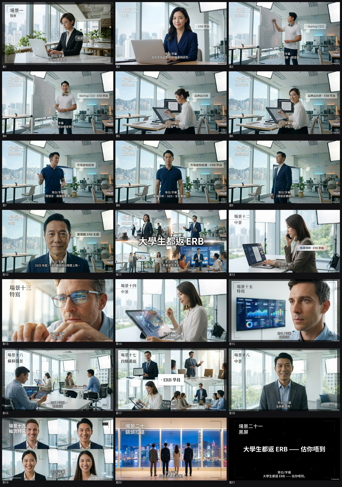
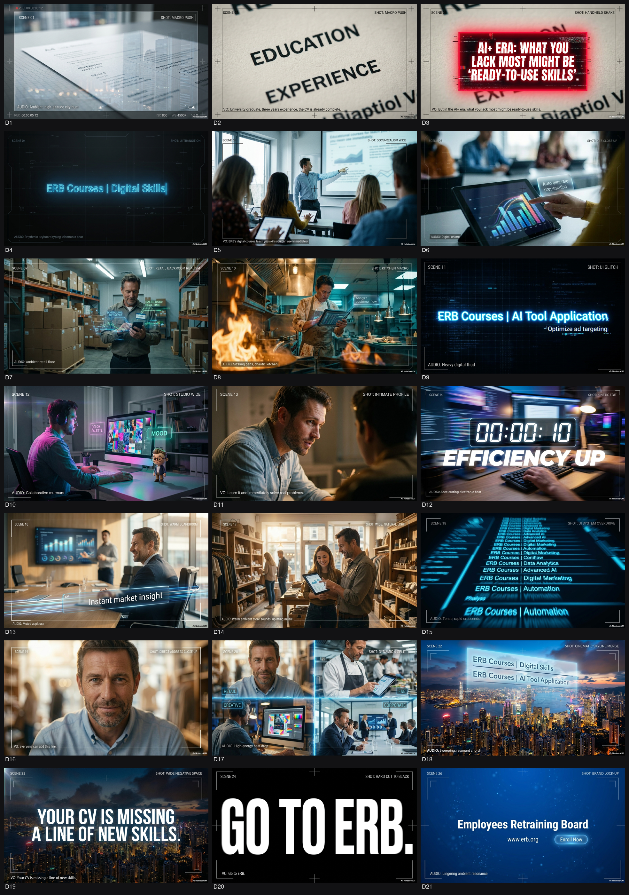
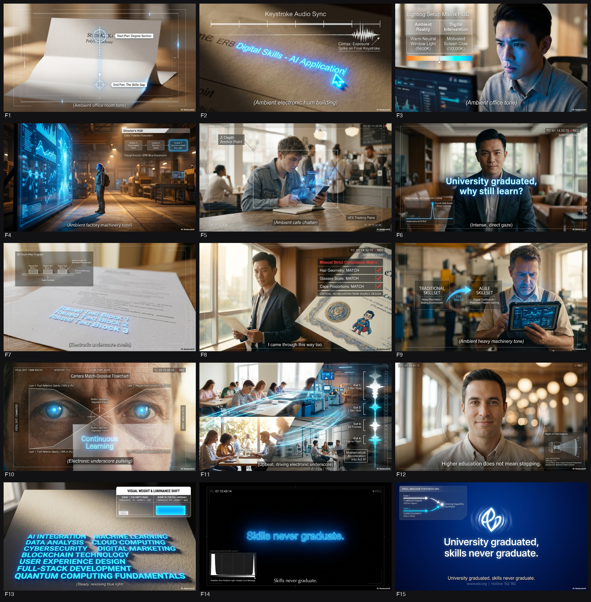
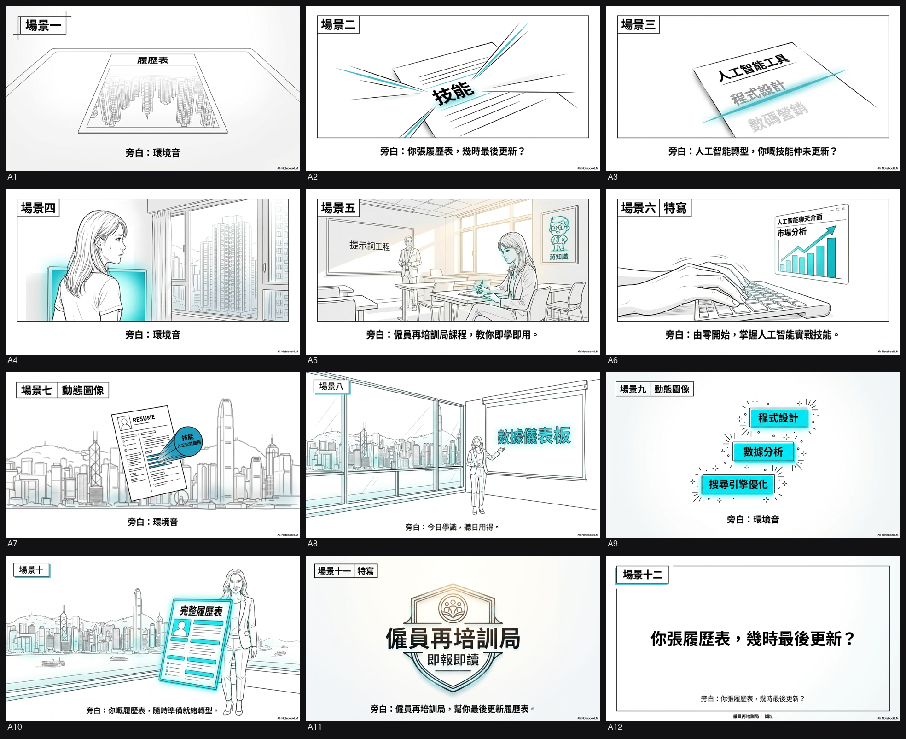
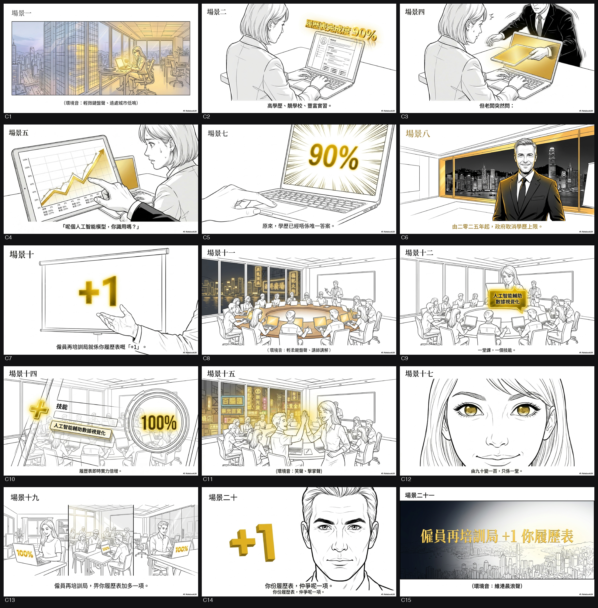
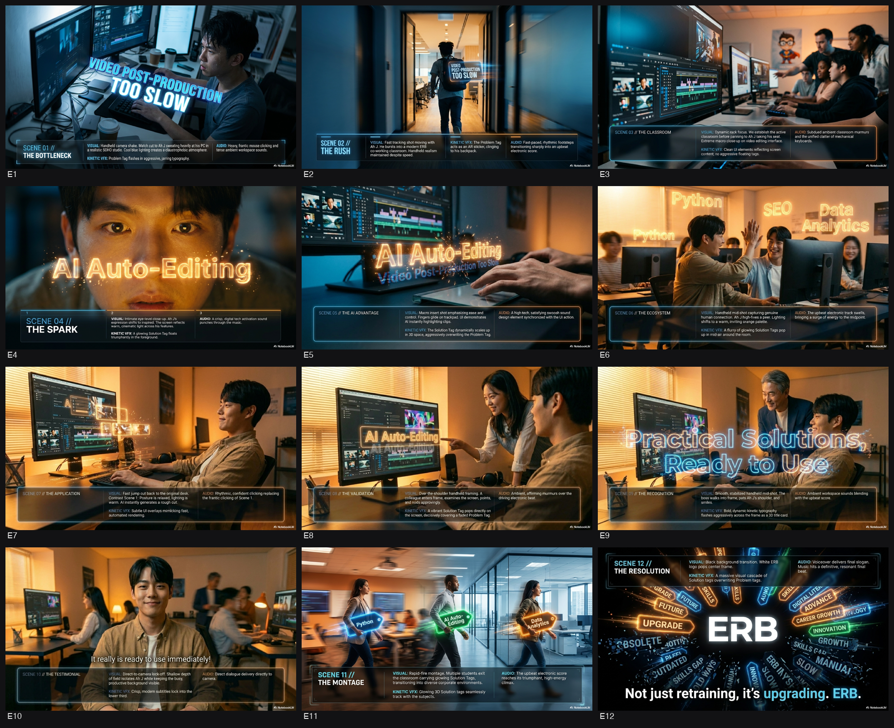

Phase 0 → VID 1 之間嗰幾日，諗到乜就入低，撳「＋ 加入」累積（VID 1 啟動委員會時一齊餵 AI）。
是次項目為僱員再培訓局（ERB）因應香港經濟轉型及科技普及化（如 AI+
跨行業應用大趨勢），由傳統「就業為本」全面升格至「技能為本」的重大策略轉型
[1-3]。社會環境下面對激烈競爭，加上自 2025 年起 ERB
課程已取消學歷上限，服務對象擴展至全港 15 歲或以上人士
[3]。為洗脫過往只針對基層或失業人士的刻板印象，ERB
需要製作全新短片系列，以貼地方式向大眾（特別是擁有多元學歷背景及年輕世代）推廣數
碼新技能培訓 [4-6]。
傳意目標： 強調在數碼轉型時代持續進修及學習新興技能（如生成式
AI、數據分析等）的重要性，改變受眾對 ERB
的固有印象，帶出課程具備高度實戰應用價值 [2, 7, 8]。
受眾改變：
令持有大專學歷的在職人士及年輕人從「抗拒傳統進修」轉變為「主動尋求技能升級」以完
勝職場 [5, 8, 9]。
KPI： 大幅提升 ERB 於 Facebook、IG、LinkedIn 及 YouTube
的流量與互動率（Reach, Views & Engagement），從而帶動相關課程查詢及報讀人數 [8,
10]。
1. 在各行各業科技應用及 AI+
的大趨勢下，持續學習與提升數碼技能是保住職場競爭力的唯一出路 [2]。
2. ERB
課程不設學歷上限，提供具實戰性、能即學即用的高階未來技能培訓，助你輕鬆拆解工作難
題 [2, 5]。
3. 掌握數碼新技能，助你完勝職場！（Emotional Appeal: 告別職場焦慮；CTA: 立即報讀
ERB 課程為自己 Upgrade）[11]。
* 短片系列： 3 至 4 集，每集約 1.5 分鐘 [12, 13]。
* 精華片段： 1 條涵蓋所有集數的 30 秒 Highlight 版本 [12, 13]。
* KOL 參與： 邀請及安排至少 1 位具人氣、形象正面且受年輕人歡迎的藝人 / KOL
參與拍攝 [14, 15]。
* 語言及格式： 廣東話旁白/對白，配以繁體中文熒幕蓋字及字幕 [16, 17]。
* Optional 項目： 將吉祥物「蔣知識 (Captain K)」開發為 3D 動畫角色，透過
AI 輔助動畫技術，在真人實景中與導師及 KOL 自然互動 [17, 18]。
* B (Briefing date): 資料不足（標書未有列明截標前的簡介會日期）
* D (Deadline): 2026-06-17 12:00:00 (ISO 日期，香港時間) [19]
* P (Presentation date): 資料不足
* Milestone 1: 2026-06-29 (成功中標及會面) [20]
* Milestone 2: 2026年7月下旬至8月上旬 (拍攝及後期製作) [21]
* Milestone 3: 2026年8月中旬 (推出第 1 集) [21]
* Milestone 4: 2026年9月至10月 (推出餘下集數及精華片段) [21]
research 掘出嚟嘅真嘢（logo 故事/mascot/官員/歷屆/文化位）。委員會出橋會扣連呢啲；你自己睇到有橋，直接寫入上面 Notes。
1. 🏷️ 蔣知識變身 AI 導師
- 事實：ERB 有官方吉祥物「蔣知識 (Captain K)」，客戶更提議可開發為 3D 動畫角色並結合 AI 技術。（出處：debrief）
- 💡 可以點做橋：可以將 Captain K 化身為高科技 AI Avatar 穿梭真實職場指導 KOL。
2. 🏷️ 禁叫「學生」與「再培訓」
- 事實：官方紅線嚴禁稱呼受眾為「學生」，必須叫「學員」；並嚴禁強調「再培訓」，必須稱「技能提升」。（出處：debrief）
- 💡 可以點做橋：可以玩「職場無學生，只有不斷升級的玩家」這種成熟進取的態度。
3. 🏷️ 星形人形 Logo 動態化
- 事實：ERB 企業 logo 包含一個圓滑小寫 erb 及一個簡化星形/人形動作符號。（出處：資產盤點 research）
- 💡 可以點做橋：可以將 logo 上的星形人形拆解，變成貫穿全片代表「技能解鎖 (Skills Upgraded)」的視覺特效。
4. 💡 大學生踩場 ERB
- 事實：2025 年初起 ERB 已正式取消學歷上限，打破以往只限中三以下基層報讀的規定，Degree holder 都可以讀。（出處：背景 research）
- 💡 可以點做橋：可以用高學歷白領走入 ERB 讀高階數碼課程的強烈反差感做開場。
5. 💡 進修有錢收
- 事實：7天或以上就業掛鈎課程全免兼有每日約 $241 津貼；非就業掛鈎課程月入 $14,000 以下亦可豁免學費。（出處：背景 research）
- 💡 可以點做橋：可以用「帶薪升級」或「零成本學 AI」這類最實際的利益點直接擊中打工仔。
6. 🇭🇰 新時代的「一技傍身」
- 事實：香港民間深植「一技傍身，唔憂搵食」的觀念，而現今政策正推動由「就業為本」轉型為「技能為本」。（出處：資產盤點 research / 背景 research）
- 💡 可以點做橋：可以將老一輩的「一技傍身」概念翻新，變成白領應對 AI 時代的「新技傍身」。
7. 👤 老闆視角的技能需求
- 事實：ERB 主席黃傑龍是知名商界人士，親自推動取消學歷上限及引入新技能課程的改革。（出處：背景 research）
- 💡 可以點做橋：可以借用商界老闆的角度，點出「現今職場最渴求邊種新技能人才」。
以下內容聚焦「ERB 新技能訓練」相關的真實政策背景同最新改革走向，方便你落廣告策略同內容 angle。
---
- 政策大方向：由「就業為本」轉做「技能為本」
- 2024 年《施政報告》正式提出要「改革僱員再培訓局」，由以往只為基層勞工提供「就業為本」培訓，提升至為整體勞動人口提供「技能為本」的培訓課程及策略。[8]
- 意味住：唔再淨係幫失業/基層搵工，而係協助全港打工仔、專業人士、轉職人士持續 upskill / reskill，配合經濟轉型。[8]
- 回應結構性人手短缺 + 產業升級
- 政府多次提到本港出現「勞動人口下跌、人才短缺」問題，需要透過再培訓提升在職人口生產力，支援如創科、醫護、物管、物流等行業發展。[4][8]
- 「創科．愛增值計劃」之類創科相關 ERB 課程超過 50 個，專攻創新科技及資訊及通訊科技（ICT），全部學費全免，反映政策用再培訓去補創科人手缺口。[4]
- 擴闊服務對象：不再限學歷、不再只限基層
- ERB 主席指，配合 2024 年政府改革方向，ERB 由 2025 年初起已落實短期改革，包括「取消參與培訓人士的學歷上限」，再培訓不再局限中三以下學歷，吸納更廣泛在職人士。[6][10]
- 同時研究修例、日後擴闊服務對象至來港專才，即新來港專業/輸入人才都可以用 ERB 提升技能，支援政府「搶人才」策略。[10]
- 終身學習 / 第二人生職涯
- ERB 官方及宣傳口徑都強調「一專多能」「增值技能」「開創職涯新可能」，希望將再培訓由「失業被迫學」變成「主動進修、職涯轉型」的常態。[1][5]
---
- 機構定位同成立背景
- 僱員再培訓局（ERB）係法定組織，並非政府部門，根據《僱員再培訓條例》於 1992 年成立。[3]
- 任務：為失業人士、在職人士及特定群組提供職業再培訓及就業支援。[3]
- 課程類型及模式（「新技能訓練」可指技能提升類）
- 主要類別：
- 就業掛鈎課程：全日制，主要為失業人士提供職業專才教育，與就業服務掛鈎。[7]
- 技能提升課程：屬非就業掛鈎，多為半日或晚間制，適合失業及在職人士報讀，協助提升本業技能、發展「一專多能」，亦接受轉行人士入門培訓。[1][9]
- 通用技能課程：語文、資訊科技、軟技能等。[7]
- 「新技能提升計劃」類課程，同樣以兼讀形式提供，強調為轉業人士提供入門訓練，增加行業認識。[2]
- 收費及津貼機制（受眾最關心）
- 就業掛鈎課程：學費全免 + 每日津貼
- 所有為期 7 天或以上 的就業掛鈎課程，費用全免。[4]
- 現行每日津貼額約 HKD 241；「青年培育計劃」為 HKD 121 左右。[4]
- 非就業掛鈎課程（技能提升/通用技能）：按收入分級學費
- 學費以遞交申請當日 ERB 訂定金額為準。[1][4]
- 收入為零或每月約 HKD 14,000 或以下可申請學費豁免；
HKD 14,001–22,000 為「高度資助學費」；
高於 HKD 22,000 屬「一般資助學費」。[4]
- ERB 官網亦列明，部分非就業掛鈎課程學費可按收入申請資助或豁免。[1]
- 2025–26 改革時間線重點
- 2024 年《施政報告》提出改革 ERB，由就業為本 → 技能為本。[8]
- ERB 表示由 2025 年年初起 已落實一系列短期改革措施：
- 取消學歷上限；
- 推出更多「新技能」及較高階課程等。[6][10]
- 2025–26 年度首三季，再培訓局按新方向制定全面深化改革的工作計劃，主題為「創新 前瞻 協作 提升」，集中技能為本訓練。[6]
---
- 政策層（政府）
- 勞工及福利局局長：孫玉菡（Sun Yuk-han, Chris）— 負責勞工政策及就業培訓整體方向，在立法會回答關於 ERB 課程及改革的提問。[8]
- 政策文件：2024 年《施政報告》提出改革 ERB，將其功能由集中基層就業轉為全人口技能提升。[8]
- ERB 管治層（法定機構）
- 僱員再培訓局主席：黃傑龍（Wong Kit-lung）— 2025 年起多次公開談及 ERB 改革，包括：
- 已取消學歷上限；
- 正研究改名及修例後擴闊服務至來港專才。[10]
- 僱員再培訓局：法定組織，負責規劃、資助及監察再培訓課程，並與培訓機構合作提供課程。[3][7]
- 前線執行單位（可作合作或拍攝場景）
- 多間獲 ERB 資助的培訓機構，例如：
- 香港聖公會麥理浩夫人中心（提供技能提升課程）[9]
- 職訓局、社福機構及專業團體等（多為 ERB 課程承辦機構，適合拍實景、訪問導師/學員）。
---
- 最實際：幾多錢？有冇津貼？值唔值得讀？
- 網上討論及攻略文章集中於：
- 「ERB 好唔好？值唔值得報？」
- 「學費幾多？邊啲課程免費？有冇 daily allowance？」[4]
- 重點 concerns：
- 想轉行／失業，最在意：學費是否全免 + 有冇每日津貼；
- 在職人士：會關心兼讀時間（夜校／半日制）、課程質素、能否幫升職加薪/job hopping。[1][4]
- **形象上：由「失業再培訓
【來源 Sources】
- https://www.erb.org/tc/training-courses/erb-courses/course-categories/skills-upgrading-courses
- https://ericwong189.wordpress.com/%E8%AA%B2%E7%A8%8B%E4%BB%8B%E7%B4%B9/%E6%96%B0%E6%8A%80%E8%83%BD%E6%8F%90%E5%8D%87%E8%A8%88%E5%8A%83%E8%AA%B2%E7%A8%8B/
- https://www.erb.org/tc/about-erb/faqs
- https://hk.amazingtalker.com/blog/zh-hk/other/99425/
- https://www.facebook.com/hk01wemedia/videos/%E5%83%B1%E5%93%A1%E5%86%8D%E5%9F%B9%E8%A8%93%E5%B1%80%E5%A2%9E%E5%80%BC%E6%8A%80%E8%83%BD%E6%B1%82%E8%AE%8A%E6%96%B0-%E9%96%8B%E5%89%B5%E8%81%B7%E6%B6%AF%E6%96%B0%E5%8F%AF%E8%83%BD/354474070559210/
- https://www.erb.org/tc/corporate-information/press-releases/erb-formulates-implementation-plan-to-advance-reforms-in-skills-based-training
- https://www.erb.org
- https://www.info.gov.hk/gia/general/202506/04/P2025060400286.htm
- https://icds.skhlmc.org.hk/erb_course/information/
- https://www.hkctsvt.edu.hk/about-us/media-coverage/20260212HKET
以下是為廣告創作團隊準備的『官方用語對照表』，以確保宣傳片內容符合香港政府僱員再培訓局的官方用語。
---
『官方用語對照表』
1. 部門 / 辦事處 中文正名 + 官方英文全名 (+ 官方網址)
* 中文正名： 僱員再培訓局
* 官方英文全名： Employees Retraining Board (ERB)
* 官方網址： www.erb.org
2. 計劃 / 政策 / 程序 的官方中英名稱
* 僱員再培訓局課程： ERB Courses
* 技能為本培訓： Skills-based Training
* 技能為本培訓策略： Skills-based Training Strategy
* 終身學習： Lifelong Learning
* 技能提升： Skills Upgrading
* 技能提升課程： Skills Upgrading Courses
* 高階課程： Higher-level Courses (或可按具體內容使用「高階技能培訓課程」)
* 未來技能培訓課程： Future Skills Training Courses (直接翻譯，因應ERB新發展方向)
* 學歷限制： Restriction on Educational Attainment
* 香港合資格僱員： Eligible Employees of Hong Kong
* 培訓就業一條龍計劃： One-stop Training and Employment Scheme
* 通用技能課程： Generic Skills Courses
3. 專有名詞 / 技術詞 的官方或慣用中英對照
* 學員： Trainees
* 科技應用大趨勢： Megatrend of Technology Applications
* AI+： AI+ (或可闡述為「人工智能及相關應用」)
* 數碼技能： Digital Skills
* AI輔助動畫： AI-assisted Animation
* 3D動畫角色 (虛擬化身)： 3D Animated Character (Avatar)
* 名人： Celebrity
* 關鍵意見領袖： Key Opinion Leader (KOL)
* 工作情境劇： Work Scenario Drama
* 體驗課程： Taster Courses
* 技能比賽： Skills Competitions
* 項目團隊： Project Team
* 項目主管： Project Leader
* 截標日期： Tender Closing Date
* 批出合約： Tender Awarded
* 分鏡圖： Storyboard
* 劇本： Scripts
* 字幕： Captions and Subtitles (如需區分，可使用「標題字幕」及「對白字幕」)
* 平面及攝影圖像／素材： Graphic and Photographic Images / Materials
* AI動畫： AI Animation
* 動畫圖像及效果： Animated Graphics and Effects
* 製作團隊及器材： Production Crew and Equipment
* 持牌背景音樂： Licensed Background Music
* 錄音及混音： Audio Recording and Sound Mixing
* 聲畫效果： Sound and Visual Effects
* 旁白配音員： Voice-over Talents
* 離線剪接及在線剪接： Off-line and On-line Editing
* 後期製作服務： Post-production Services
* 牌照： Licenses
* 美術指導： Art Direction
* 化妝： Make-up
* 髮型設計： Hair Styling
* 服裝： Wardrobe
* 交通： Transportation
* 保安： Security
* 版權費、版稅及加載費： Copyright, Royalty and Loading Fee
* 宣傳品： Promotional Materials
* 各種媒體及渠道： Various Media and Channels
* 首播日期： First Broadcasting Date
* 暫定工作時間表： Tentative Working Schedule
* 技術建議書： Technical Proposal
4. 常見會錯譯 / 易混淆的地方，標明正確寫法
* ERB：
* 首次提及時，請使用全稱「僱員再培訓局」。
* 其後可使用「ERB」或「局方」。
* 英文首次提及時，請使用全稱「Employees Retraining Board」。
* 其後可使用「ERB」。
* Trainee vs. Student：
* ERB的服務對象應稱為「學員」(Trainees)，而非「學生」(Students)，因其性質為再培訓及技能提升。
* Course vs. Programme：
* 一般課程可使用「課程」(Course)。
* 對於較大型、包含多個元素的計劃或項目，ERB會使用「計劃」(Scheme / Programme)，例如「培訓就業一條龍計劃」(One-stop Training and Employment Scheme)。請根據具體語境選擇。
* Upskilling vs. Retraining：
* 「Upskilling」應翻譯為「技能提升」(Skills Upgrading)。
* 「Retraining」應翻譯為「再培訓」(Retraining)。
* 宣傳片側重於「終身學習」和「技能提升」，以應對科技發展，這反映了ERB服務對象和重點的轉變，不再僅限於失業人士的「再培訓」。
* AI+：
* 可直接使用「AI+」。如需更詳細說明，可考慮「人工智能及相關應用」。
* **Educational a
9 條尖問題，逼 agency 諗加咩 element / 風格，落橋前消化。
- Q1 如果呢個 message 只可以打動「最唔關心、最 cynical」嗰個觀眾 —— 要加咩一個 element(畫面/聲/人物/情境)先 3 秒內 hook 住佢、令佢唔 skip?
→ 加入真實打工仔糧單數字跳動嘅 UI 動畫，或者直接出「取消學歷上限」嘅巨型大字報 graphic，配搭急促嘅鍵盤敲擊聲 ASMR。
- Q2 呢班受眾平時食開咩視聽語言(平台/節奏/語氣)?要 adapt 邊種佢熟悉嘅風格,先入到腦而唔似「政府嘢」?
→ Adapt YouTube 科技開箱或財經分析 Channel 嘅快剪接 (Jump cut) 節奏，加入螢幕錄影 (Screen recording) 質感同動態數據圖表 element。
- Q3 成個 campaign 只准觀眾記住一個 element(一個畫面 / 一個 visual device / 一句)—— 你揀咩?點解係佢?
→ 揀「$14,000」同「$22,000」呢兩個真實資助界線數字作為核心 Visual device。因為受眾最關心切身利益，用具體銀碼字體放大做畫面主體，最直接破除「ERB 淨係基層讀」嘅舊有認知。
- Q4 客戶 key message 好抽象,要用咩具體 element(真場面/真數字/真人/真物)去「show 唔 tell」,令佢落地、唔流口號?
→ 加入真實創科或物流業嘅操作介面 (e.g. 寫 Code 畫面、AI 軟件 UI、物流系統 Dashboard) 嘅特寫鏡頭，用高科技儀器運作嘅環境音代替傳統 VO 說教。
- Q5 觀眾點解要信 / 關佢事?要加咩證據 element 或情感共鳴 element,先由「事不關己」變「同我有關」?
→ 加入「每日津貼 $241」嘅真實過數 UI 提示音 element，或者疊加 ERB 主席黃傑龍宣佈「取消學歷上限」嘅真實新聞報道聲帶作為背景音，用官方真確性建立信任。
- Q6 呢條嘢實際喺邊度、咩狀態被睇到(電視 prime / 車廂無聲 / 手機 scroll / 戶外經過)?要 adapt 咩風格(有聲冇聲 / 首 3 秒 / 大字 / 節奏)先食到當下情境?
→ 針對車廂無聲 / 手機 scroll 情境，adapt 動態字體 (Kinetic typography) 風格，首 3 秒將「學費全免」同「半日/晚間制」等字眼佔據 80% 畫面，配合高對比度螢光色塊。
- Q7 出街時間(事件前/中/後)decide 調子係「預告期待」定「總結成就」?要加咩 element 配合呢個時間感?
→ 調子係「全新啟動」，因為 2025 年初已落實短期改革。要加入進度條 (Progress bar) 由 0 飛去 100% 嘅 UI element，配合「2025 技能為本」嘅時間戳記 (Timestamp)。
- Q8 同類(同部門/同題材)政府片嘅「安全做法」係咩?要 adapt / 升級邊種風格 element(質感/節奏/transition/配樂/美術流派),先做到「框內最高質」而唔悶?
→ 安全做法係「課室排排坐聽書」鏡頭；要升級可以 adapt 現代企業宣傳片嘅冷色調 (Cool tone) 燈光同 Match cut 轉場技巧，將不同專業工作場景 (如醫護、創科) 無縫連繫。
- Q9 要加咩一個 unexpected element(反差/新 visual device/新手法),先同部門過往 campaign 拉開距離、唔似翻炒,但又唔踩紅線?
→ 加入中環甲級寫字樓或高階 Server 房嘅 Establishing shot 作為開場 element，甚至用勞工及福利局局長孫玉菡《施政報告》份實體文件做 3D 掃描翻頁動畫，徹底洗脫過往「基層勞工」嘅舊視覺框架。
【呢條 brief 判定】目的:鼓勵參與 題材:人才就業
【同目的(鼓勵參與)ISD 慣性】主開頭 真人/講者(52%);格式率 旁白35% 熒幕蓋字100% 標誌結尾82% CTA82% 感嘆76% 三段式·0%;慣用結尾 香港戲院商會標誌, 衞生署標誌, 香港電影發展基金標誌, 衞生防護中心標誌
【對口 ISD 舊作借鏡(同 目的×題材,參考佢點寫,唔好照抄,要創新)】
— Hong Kong—Asia’s premier talent hub (2) [形象/成就(propaganda) | 人才就業]
▶ https://www.youtube.com/watch?v=nwC85MuHnBk&list=PL1188A9802575C33F
Tony Zhou：「高端人才通行證計劃」吸引我來香港發展 / 現在我的客戶遍布全球 / 熒幕蓋字：中國內地 / 周錫晨 / DayOne數據中心服務交付總監 / Tony Zhou：太太和兒子都一起來到香港生活 / 香港不僅讓我的事業快速躍升 / 還為我和家人提供一個安樂窩 / 旁白：香港作為亞洲第一的人才樞紐 / 致力吸納國際高端人才落戶 / 拓展事業、享受生活、成就卓越 / 促進本地經濟繁榮 / 熒幕蓋字：香港 / 拓展事業 · 樂享生活 · 成就卓越 / 熒幕蓋字：勞工及福利局標誌 / 香港人才服務辦公室標誌
— 香港—亞洲頂尖人才樞紐 (1) [形象/成就(propaganda) | 人才就業]
▶ https://www.youtube.com/watch?v=DqyOH7Y5F9c&list=PL1188A9802575C33F
Grégoire Michaud：香港為我提供成功所需的材料 / 熒幕蓋字：瑞士 / Grégoire Michaud / 企業家 / Bakehouse創辦人 / Grégoire Michaud：在香港創業，讓我接觸到來自全球的客人 / 機會就在這裏！ / 旁白：香港作為亞洲第一的人才樞紐 / 致力吸納國際高端人才落戶 / 拓展事業、享受生活、成就卓越 / 促進本地經濟繁榮 / 熒幕蓋字：香港 / 拓展事業 · 樂享生活 · 成就卓越 / 熒幕蓋字：勞工及福利局標誌 / 香港人才服務辦公室標誌
— Hong Kong, Asia's Event Capital (April 2026) [形象/成就(propaganda) | 盛事旅遊/人才就業]
▶ https://www.youtube.com/watch?v=6sh33bTFI24&list=PL1188A9802575C33F
旁白：政府繼續舉辦大型盛事 / 熒幕蓋字：2026年香港國際七人欖球賽 / 4月17至19日 / 熒幕蓋字：天馬凌雲──故宮博物院藏繪畫珍品 / 2026年3月20日至2027年3月17日 / 旁白：精彩的文化 / 熒幕蓋字：漢風泱泱：雄渾與交融的盛世 / 3月20日至9月20日 / 旁白：體育 / 熒幕蓋字：2026 UCI 世界盃場地單車賽(中國香港) / 4月17至19日 / 旁白：金融 / 熒幕蓋字：香港國際創科展 / 4月13至16日 / 旁白：貿易 / 旁白：和旅遊盛事陸續呈獻 / 熒幕蓋字：冠軍賽馬日 / 4月26日 / 旁白：歡迎大家和旅客一起參與 / 熒幕蓋字：CON-CON HONG KONG 2026 / 4月4至5日 / 旁白：樂在其中 / 熒幕蓋字：2026香港閱讀+ / 4月18日至26日 / 旁白：感受香港的多姿多彩 / 熒幕蓋字：香港時裝節 / 4月27至30日 / 旁白：獨特魅力和動感 / 熒幕蓋字：2026 五人冰球賽 / 4月23日至5月9日 / 熒幕蓋字：當下──香港藝術展 / 2026年3月20日至2027年
— 河套深港科技創新合作區 [形象/成就(propaganda) | 人才就業]
▶ https://www.youtube.com/watch?v=KPcWhgjyUCg&list=PL1188A9802575C33F
旁白： / 河套深港科技創新合作區是國家重要戰略平台 / 香港園區坐擁「一河兩岸、一區兩園」的獨特優勢 / 熒幕蓋字： / 香港 / 深圳 / 港深創科園 / 深圳科創園區 / 旁白： / 擔當國家開闢創新制度的試驗田 / 建設全速推進，首批三座大樓已投入營運 / 熒幕蓋字： / 濕實驗室大樓 / 人才公寓 / 旁白： / 全力實現人流、資金流、物流及數據流創新要素跨境便捷流動 / 熒幕蓋字： / 人流 / 資金流 / 物流 / 數據流 / 旁白： / 打造世界級創科樞紐、建設國家關鍵創新基地 / 熒幕蓋字： / 創新科技及工業局標誌 / 港深創科園標誌
— We invite global talent to expand their careers, enjoy life, and achieve excellence in Hong Kong. [形象/成就(propaganda) | 人才就業]
▶ https://www.youtube.com/watch?v=FXsRnYpU0Kw&list=PL1188A9802575C33F
旁白：香港 / 熒幕蓋字：香港 / 旁白：憑藉背靠祖國 / 聯通世界的獨特優勢 / 匯聚全球高端人才 / 在港拓展事業 / 熒幕蓋字：拓展事業 / 旁白：樂享生活 / 熒幕蓋字：樂享生活 / 旁白：成就卓越 / 熒幕蓋字：成就卓越 / 旁白：落戶香港 / 促進經濟繁榮 / 旁白：香港，國際人才樞紐 / 熒幕蓋字：香港 / 國際人才樞紐 / 旁白：宜居宜業，機遇無限 / 熒幕蓋字：宜居宜業 / 機遇無限 / 熒幕蓋字：香港人才服務辦公室標誌
— 24小時照顧者支援專線182 183 [其他 | 人才就業]
▶ https://www.youtube.com/watch?v=4fA8LiIbqos&list=PL1188A9802575C33F
旁白：照顧者之路 / 熒幕蓋字：24小時照顧者支援專線182183標誌 / 照顧者資訊網網頁二維碼 / 旁白：有時充滿歡笑 / 有時需要喘息 / 政府提供社區照顧 / 日間以及住宿暫託等支援服務 / 為你分擔壓力 / 請致電24小時照顧者支援專線 / 182183 / 專業社工會細心聆聽 / 為你配對合適服務 / 熒幕蓋字：24小時照顧者支援專線182183標誌 / 勞工及福利局標誌 / 社會福利署標誌 / 照顧者資訊網網頁二維碼
創作概念:
用真實學員嘅「一日時間表」做骨幹：返工、搭車、加班、夜晚/週末抽時間去上 ERB 技能提升課程——全程唔賣慘，係一種「成熟打工仔自我管理」嘅升級感。每講一個「點樣安排到」嘅方法，畫面就用「過數提示音/通知音」做節拍，疊加大字講清楚最現實利益點：就業掛鈎課程全免 + 每日約 $241 津貼、以及取消學歷上限；再落到課堂實操（真 UI、真犯錯再修正）證明「即學即用」。
系列化好做：每集跟一位不同行業/學歷背景嘅真實學員，highlight 30 秒版就用「節拍」剪成爽快 montage。
人/景:
- 2–3 位真實學員（可揀：Degree 白領 + 前線主管/營運 + 轉型數碼崗）
- ERB 導師（真課堂互動、實操指導）
- KOL 做「旁觀者/同路人」：唔講大道理，淨係問到肉問題：「你點安排？值唔值得？」
- 場景：港鐵車廂（無聲都靠大字）、公司茶水間/夜晚 office、課堂實操位（電腦屏幕/工具介面特寫）、街邊便利店買飯團嗰啲真日常
Visual Device:
「時間表 UI 疊加」：畫面左側永遠有一條今日 timeline（08:45 / 13:10 / 20:30…），每去到一個時段就 pop 出關鍵字（「返工」「放工」「上堂」「實操」）。同時用「$241 提示音」做節拍點，配合大字（「每日約 $241 津貼」「學費全免（就業掛鈎課程）」）令利益點硬入腦。
主打口號:
「帶薪升級，唔使等。」（副句可配合大字：ERB 技能提升｜取消學歷上限）
Proposed 明星/名人:
- MIRROR 呂爵安 Edan（形象正面、受年輕人歡迎；做「同樣好忙都要升級」嘅同路人，帶動討論同分享）
亮點扣連：用咗 #5 進修有錢收（$241/日 + 全免做核心 hook）＋ #4 取消學歷上限（學員設定有 Degree 代表性）＋ #2 禁叫學生/再培訓（全程用「學員」「技能提升」字眼）。
創作概念:鏡頭跟一班睇落完全唔似「傳統 ERB 學員」嘅年輕專才——西裝律師、startup 創辦人、設計師、Marketing 經理,逐個自信咁示範佢哋點用新數碼技能解難。觀眾一路以為睇緊高端職場片,中段每人講一句「我喺僱員再培訓局學嘅」,逐格揭盅身份,直接撕走「ERB = 基層 / 失業」標籤。硬訊息「2025 年起不設學歷上限、全民可讀」由 reveal 嘅反差自然帶出,唔使口號式硬塞。
人/景:4-5 位 18-35 歲、高學歷在職素人/演員(跨行業:法律、創科、設計、市場營銷);場景係現代化 co-working space、tech startup office、design studio,擺脫舊式社區課室印象。可加 ERB 主席黃傑龍真實 soundbite 增權威。
Visual Device:「身份字卡 reveal」——每位主角畫面角落本來打住職銜(e.g.「執業律師」),講完關鍵句,字卡動態加多一行「· ERB 學員」,簡潔有力,反差全靠呢一下。
主打口號:大學生都返 ERB —— 估你唔到。
Proposed 明星/名人:建議用形象專業、年輕又有「斜槓 / 進修」人設嘅 KOL(如知識型 YouTuber 類)做其中一位 reveal 主角 —— 因為佢本身已經係「高學歷 + 貼市」嘅活招牌,佢一講「我都係 ERB 學員」,對核心受眾衝擊最大。(具體人選後期按形象正面、無負面新聞篩選)
---
創作概念:
KOL 走入真實職場（中環寫字樓/後勤控制室/創科工作室），用同一條問題快問快答：「你而家最卡住（最驚 AI/數碼轉型）係邊一 part？」每個從業員即場拎出真實工作畫面（報表、客戶電郵、排程、數據表），KOL 轉身就帶到對應嘅僱員再培訓局 ERB「技能提升」解法：導師/學員用數碼技能示範「30 秒前後對比」，用結果證明「即學即用」。
核心硬訊息用大字爆出：AI+、終身學習、技能提升、取消學歷上限，最後落 CTA：去 www.erb.org 睇 ERB Courses。
人/景:
- KOL（主持/帶路）
- 3–4 位真實從業員（例如：Marketing/HR/物流調度/客戶服務/零售營運）+ 1–2 位 ERB 導師 + 1–2 位真實學員
- 場景：中環甲級寫字樓 open office、會議室、機房/伺服器房門口、物流 dashboard control room、創科園 co-working（實景、真 UI）
Visual Device:
「痛點標籤」：每次有人講出卡位，畫面即刻彈出一個超大痛點 Tag（例：「做報表做到爆」、「客戶email回到凌晨」、「流程亂」），Tag 會 match cut 變成「技能解鎖 Tag」（例：「數據分析」、「AI 工具應用」、「流程自動化」），Tag 角落固定出現「ERB 技能提升」細章作 branding。
主打口號:
「你份工卡住邊度？ERB 幫你升級。」
Proposed 明星/名人:
- 193 郭嘉駿（貼地、反應快、擅長快問快答同街訪節奏；又夠年輕化，唔會「政府味」）
亮點扣連：用咗 #4 大學生踩場 ERB（以「白領/高學歷」真職場開場反差洗印象）＋ #2 禁叫學生/再培訓（全片只用「學員」「技能提升」）＋ #1 蔣知識 Captain K（可選：用作「技能解鎖」小 AI 提示彈窗，唔搶真人真聲）。
---
創作概念:用「反差萌踩場」做 hook。開場一個西裝骨骨嘅中環高階白領、或高傲 IT 狗,鬼鬼祟祟又掩飾唔到自豪咁行入 ERB 大樓,旁人(同事、保安)一臉「你係咪行錯」,佢直接對鏡頭 show off:「冇學歷上限,高階 AI 課程學費全免仲有津貼,我點解唔讀?」用最強烈嘅視覺反差,一鋪過洗走「失業阿叔先讀」嘅舊認知。硬訊息扣連:ERB 已升格全勞動人口嘅「技能提升」平台,精打細算嘅聰明人先識用呢個免費外掛。
人/景:高學歷在職白領主角(可由 KOL 飾演);場景由中環甲級寫字樓 establishing shot 開場,行入 ERB 現代化教室/實驗室(AI 軟件 UI、高階器材特寫),刻意製造「高端職場 → ERB」嘅無縫 match cut。穿插真實過數 UI:「每日津貼 \$241」「學費全免」字塊放大做主體。
Visual Device:Kinetic typography 利益字爆——關鍵銀碼同政策字眼(「冇學歷上限」「\$241/日」「學費全免」)以高對比螢光色塊佔據 80% 畫面,配 ASMR 鍵盤聲 + 過數提示音,首 3 秒 hook 死手機 scroll、車廂無聲嘅 cynical 觀眾。
主打口號:而家冇學歷上限,你冇藉口
Proposed 明星/名人:建議 Dee 姜濤 / MC \$oHo & KidNey 二人組——若要爆話題 + 反差喜感,\$oHo & KidNey 嘅「打工仔自嘲」人設最食「點解唔用」呢個務實笑位;若要 premium 上進感則用單一型格 KOL。一句點解:佢哋形象貼地、後生緣強,踩場態度演繹得抵死又唔老土。
亮點扣連:用咗「💡 大學生踩場 ERB」(高學歷踩場反差)+「💡 進修有錢收」(\$241 津貼 / 學費全免利益字爆)+「🇭🇰 新時代『一技傍身』」(白領 AI 時代新技傍身)。
---
> ⚠️ Round 1 只出概念,未 develop 12 格 board。Raymond 揀中邊個方向,先做 full storyboard + 文案 script + KV。兩個概念共用上方 style_anchor;明星建議待 client 拍板邀約。
創作概念:
每集用一份「學員履歷表 CV」做主線：開場係一張好完整、好「學歷亮眼」嘅 CV（刻意反差：大學畢業、幾年經驗），但畫面彈出一個紅色提示：「AI+ 時代：你最缺嘅，可能係『即用技能』。」跟住 CV 上面自動新增一行：「ERB Courses｜Digital Skills」（例如 AI 工具應用、數據分析、數碼營銷等），再即刻切去課室實作＋工作場景應用，展示「學完—即刻解到問題—效率上升」。最後回到 CV：新增技能行變成「打開更多可能性」嘅視覺收結，順勢落 CTA 去 www.erb.org。
同時用一張 CV 連起「新舊受眾」：唔同學歷、唔同行業都係同一個動作——為自己加一行技能。
人/景:
- 學員（Trainees）主角 3–4 位：有學位在職人士為主，配一位傳統行業在職人士（平衡舊受眾）。
- 場景：課室（真係操作軟件、做練習）、會議室（用數據/AI 工具出 report）、零售/餐飲後台（用數碼工具排更/分析銷售）、創意 studio（AI 輔助出 moodboard）。
Visual Device:
- 「CV 介面」動態圖像：每次學到一個技能，就喺 CV 上 pop-up 新增一行；同時旁邊出現「實戰應用」小標籤（例如「自動生成簡報／分析客流／優化廣告投放」），做到無聲都明。
- 每集最後一秒：CV 底部固定出現「僱員再培訓局 (Employees Retraining Board)｜www.erb.org」作一致 branding。
主打口號:
你份 CV，差一行新技能。去 ERB。
Proposed 明星/名人:
梁祖堯（口條清晰、形象專業可信、節奏感好；可做「CV 檢視官／體驗者」：用輕專業語氣帶觀眾睇每位學員點樣「加一行」而唔流於搞笑，符合「fresh 但穩陣」。）
---
創作概念:呢個世代最緊張嘅唔係張沙紙,係張履歷追唔追到市。我哋 follow 一份份真實履歷表 —— 本身已經有大學學位、有工作經驗,但下面新加咗一行 ERB 數碼技能(AI 應用、數據分析、數碼營銷)。鏡頭由履歷表上嘅一行字,溶接去學員喺真實工作場景中操作緊嗰項技能、解決緊真問題。Show 唔 tell:技能價值 = 履歷表上實實在在多咗、用得着嘅一行。
人/景:四個唔同背景學員嘅履歷表特寫(打字機/打印中嘅動態),配真實 b-roll:學員 close-up 操作 AI 軟件、執代碼、整數據 dashboard;再 cut 到佢哋喺 startup office / 數碼化工場真實應用同一技能。強調「大學生都讀 ERB」嘅反差。
Visual Device:履歷表上「新增一行」嘅 motion graphic —— 游標打出一行 ERB 技能,即刻發光、溶接成真實工作畫面。一個簡潔、易明、扣住「即用貼市」痛點嘅視覺鈎。
主打口號:大學畢咗業,技能未畢業
Proposed 明星/名人:建議 岑珈其 或 周國賢 —— 傾向周國賢:理工出身、形象正面斯文、有「斜槓 / 持續學習」personal brand,做履歷表 owner 之一 + 旁白引導者,貼到「高學歷都喺度增值」嘅核心訊息,穩陣冇爭議。
創作概念:用一份典型大學生 CV 做主軸。開場 CV 睇落光鮮,但旁白帶出 AI 時代,CV 上嘅技能欄逐項「變灰、標住 outdated」——學歷仲喺度,但彈藥過晒期。主角報讀 ERB 課程後,每掌握一項實戰技能(AI 應用、數據分析、數碼營銷),CV 上即時「解鎖」一個新項目,由灰變亮,成份 CV 重新生猛。將抽象「技能提升」變成睇得明嘅「CV 升級」,硬訊息「即學即用、貼市實用」自然落地。
人/景:1 位代表核心群體嘅年輕高學歷在職主角(由焦慮到自信嘅轉變弧);實景穿插 ERB 現代化課室真實上堂 b-roll(操作 AI 軟件、寫 code 嘅 close-up),再對比佢喺新型工作環境應用同一技能。CV 升級用乾淨 motion graphic 呈現,克制、唔做 glitch / HUD,保持商業高級感。
Visual Device:「CV 技能欄即時解鎖」——一份真實 CV 上,技能 icon 由灰→亮、由舊→新,配輕量動效。一個睇一眼就明嘅「增值」視覺鈎,夠 fresh 但唔出位。
主打口號:你張 CV,幾時 last update?
Proposed 明星/名人:不適用(主軸係素人學員真實轉變;名人/KOL 可後期以「體驗者/旁觀者」brief appearance 加入,唔搶主角戲)。
---
（CD note 畀 Raymond:Concept 1 賣「反差撕標籤」,情緒衝擊強、最快重塑認知;Concept 2 賣「實用增值」,訊息最清、最易扣 CTA。兩條都企得穩政府框內。揀中邊條,我即刻 develop full 12 格 board。）
創作概念:接「技能解鎖 + Before/After 2.0」,但唔講失業→就業,講「卡關 → 破關」。Big idea:同一份工、同一個人,撳低 ERB 課程嗰一下,成個工作狀態瞬間升級。用 Diegetic UI(敘事內界面)——唔係後期浮誇特效,而係主角喺真實辦公桌打開 ERB 課程,成個空間燈光由舊式黃光「切換」成未來藍白光,手上傳統工具(筆/計算機)重組成新工具,CV 上新 keyword(AI Prompt、Data Visualization)即時著燈。展示「即學即用」打中「時間貧窮」痛點。
人/景:同一位在職專業,同一張辦公桌,真實工作場景。Before 灰冷卡關、After 暖彩高效,同框對照 show value 唔靠口號。
Visual Device:「狀態切換嘅 0.5 秒」(《Severance》/《Black Mirror》式科技融入日常嘅冷靜質感)。Focus 喺撳掣後成個空間色溫 + 工具 + 人物狀態一齊翻轉嗰一瞬,聲畫效果夾「click-and-pop」。
主打口號:同一份工,解鎖第二個自己。
Proposed 明星/名人:Error 何啟華(肥仔) 或 MIRROR 系成員(如柳應廷 Jer)——後生受眾緣強、有「進化/突破自己」嘅人設,演「升級瞬間」夠 trendy 又唔玩膠;若客戶要更穩陣專業感,可換 岑寧兒 / 陳健安 等有「在職成長」氣質嘅創作人。
---
CD 收斂建議:Concept 1 KV 最爆、最 propaganda-friendly,適合做系列主視覺 + highlight;Concept 2 最有「應用感」、最易拆成 3-4 集情境(每集一個行業切換),social/Reels 直出。兩條都冇踩紅線(冇 stigmatize 舊學員、冇恐慌、冇 hard sell)。揀中邊條,先 develop full 12 格 board。
創作概念:直接撻爆高學歷白領最大心理關口——「我都讀完 degree，仲使去 ERB？」用 game「等級封頂（Level Cap）」嘅雙關開場：主角喺中環 glass office 對住 AI／數據畫面𢯎晒頭，頭頂浮現一個卡死咗嘅進度條「LV. MAX — 學歷上限已達」。鏡頭一 push，ERB 星形人形 logo 拆解成 AR 特效掃過畫面，進度條「破頂」再起飛，super 跳出「技能無上限」。硬扣政府訊息：ERB 已取消學歷上限，degree holder 一樣讀得，由「就業為本」升格做「技能為本」。將報讀 ERB 由「蝕底」反轉成「叻人開外掛」。
人/景:Primary 主角係一個 30 歲上下、有 degree 嘅在職白領（KOL 演），場景中環甲級寫字樓／glass office／高階 server 房，冷藍科技光。配真實創科或數據分析操作介面特寫（寫 code、AI dashboard）。
Visual Device:「卡死嘅進度條破頂」——頭頂浮 UI 進度條卡喺「LV. MAX 學歷上限」，被 ERB 星形 logo 拆解嘅 AR 光效一掃即「破頂」續飛，每解鎖一個技能彈「Skill Unlocked」。一個記得住、可貫穿全系列嘅視覺鈎。
主打口號:你以為 cap 咗 level，其實未開過呢個外掛。（學歷有上限，技能冇。）
Proposed 明星/名人:建議 Edan 呂爵安（MIRROR）——形象後生、有理科／科技 geek 底（電子工程出身），夠潮夠正面、受年輕及白領歡迎，講「開外掛升級」可信唔違和。
亮點扣連:用咗亮點 4（大學生踩場 ERB／取消學歷上限）+ 亮點 3（星形人形 logo 動態化做 Skill Unlocked 特效）—— 學歷上限做開場反差，logo 拆解貫穿全片做技能解鎖視覺。
---
創作概念:借遊戲化「技能樹(skill tree)」概念,將抽象嘅「進修 / 技能提升」具象成一場睇得見嘅升級。主角喺真實工作崗位遇到難題(e.g. 老闆要佢用 AI 出 data report,但佢唔識),透過 ERB 高階課程逐個「解鎖」新技能節點,最後喺工作上即學即用、拆解難題。直接回應受眾痛點「即學即用、能解決實際工作問題」,同時 show 出「課程不設學歷上限」——人人都開得到自己嗰棵技能樹。
人/景:多位真實唔同行業從業員(數據分析、智慧城市方案、數碼營銷)各自喺真工作場景;每人一條 mini story line,highlight 版可串成「全城都喺度 upgrade」。
Visual Device:一棵半透明發光嘅「技能樹」浮喺主角身邊,每完成一個 ERB 課程模組,就有一個技能節點由暗變光「叮」一聲解鎖(配 click-and-pop 音效),技能 title 用真實招聘市場 job title 彈出(e.g.「AI 數據分析師」「智慧城市方案顧問」),avoid 流口號、show 唔 tell。
主打口號:唔係返學,係幫你嘅履歷升級。
Proposed 明星/名人:MIRROR 成員 Anson Lo / Edan過火,改建議 林作 或 較中性嘅知識型 KOL「Ben Sir(歐陽偉豪)」——但首選 Error 何啟華(Fatboy):年輕受眾緣好、形象貼地有親和力,演「由唔識到解鎖」嘅成長弧線有反差感、夠 trendy 又唔玩膠,合 empower 唔 scare 嘅基調。
創作概念:由「人被 AI 取代」嘅恐懼,180 度反轉做「人指揮 AI」嘅掌控感。一個專業人士(律師/marketing/設計)面對海量混亂嘅 AI 數據流,用一個穩定有力嘅手勢 / 指令,將混亂梳理成有序結構。硬訊息扣位:ERB 高階課程教嘅唔係知識點,而係駕馭 AI 嘅能力;「不設學歷上限」=人人都有資格成為指揮者,而唔係被指揮。呼應策略「技能彈射器」同紅線「empower 唔係 scare」。
人/景:真實工作場景(律師樓會議室 / marketing agency open office / 設計工作室),非純課室。主角係 18-40 歲在職白領,加一位知識型 KOL 親身示範由「手足無措」到「指揮自如」。
Visual Device:「一隻靜止清晰嘅手 vs 一個流動模糊嘅世界」 —— 背景係高速 motion blur 嘅代碼/數據洪流,唯獨主角隻手(同眼神)係 razor-sharp,手一動,混亂即刻收成發光嘅有序線條。痛感與秩序同框,記得住。
主打口號:唔好問 AI 會唔會取代你,問你識唔識指揮佢。
Proposed 明星/名人:陳易希(Tony Chan) —— 科技創業者、發明家出身,有真實 tech 公信力,後生有學歷又貼地,演「指揮 AI」零違和、唔似硬撐。次選:GME / 啟發性科普 KOL「Pomato 小薯茄」系一條知識型 line,平衡專業同年輕觀感。
---
創作概念：Opening 係一個手持大學學位嘅後生仔/女，望住自己份 CV，諗「仲差啲咩？」鏡頭 zoom in 入份履歷表，突然間一行字用 motion graphic 彈出嚟 — 「ERB 人工智能應用技能認證」。個畫面跟住 split screen：左邊係佢喺 ERB 現代化課室學緊操作 AI 工具（真實 close-up 手指撳 keyboard、screen 上嘅 code），右邊係同樣嘅人返工時用同一樣技能解決實際問題（e.g. 用 AI 分析銷售數據、自動化報告）。核心係「履歷表」呢個 visual device — 大學生最熟悉、最有壓力嘅物件，變成 ERB 價值嘅載體。唔係話你讀得書少，係話你一張沙紙唔夠打。
人/景：25-32 歲白領演員（素人感強過明星感），Co-working space / 數碼營銷公司 office / ERB 委任培訓機構現代化課室（要擺脫社區中心刻板印象）。真實學員作為背景 talent。
Visual Device：「履歷表」實體化 + motion graphic 動態增項。CV 紙質質感，字粒逐粒彈出，ERB 課程名稱用 brand green highlight。中段 transition 用履歷表摺疊變形成課室門/電腦 screen，再摺返開變成工作場景。
主打口號：同一張沙紙，多幾招傍身
Proposed 明星/名人：林家謙。原因：大學畢業（CUHK）、音樂創作人形象貼近「高學歷 + 實戰技能」嘅反差，公眾認知係「讀書叻、做事叻」但唔老土，形象正面無負面， Instagram 活躍度令佢喺 18-35 歲 group 有 credibility。角色定位係「旁白聲音 + 片尾 brief 現身講一句」，唔搶學員主角戲。
---
創作概念：將 ERB 課程結構遊戲化為「技能樹」(skill tree)，但唔係卡通化，係 sleek 嘅 infographic 美學升級。主角係一位「職場 RPG 玩家」——其實就係普通在職人士，佢嘅日常工作挑戰被視覺化為「關卡」：Excel 報表地獄、AI 工具唔識用、客戶要數據分析唔識交。每遇到一個關卡，畫面右側彈出 ERB 技能樹，顯示「解鎖此技能→課程名→學完後嘅應用場景」。核心橋係將「技能焦慮」轉化為「升級慾望」，用受眾熟悉嘅遊戲語言講 ERB 嘅價值，但保持專業質感。最後 reveal 技能樹最頂係「課程不設學歷上限」——任何人都可以由任何起點開始。
人/景：KOL/名人做「玩家主角」，穿梭三個真實工作場景。建議場景：西九龍 TST 共享辦公室（初創公司）、啟德郵輪碼頭附近會展場地（活動策劃）、將軍澳工業邨（物流科技）。每個場景對應一集，1.5 分鐘講一個「關卡→解鎖→應用」故事。背景要有真實 ERB 學員做「隊友」或「NPC」式出現，展示課程完成後嘅實際應用，增加說服力。
Visual Device：「技能樹」係核心 visual hook，但 execution 要精緻——半透明 holographic 質感，浮喺真實場景之上，唔似廉價 game UI。關鍵 moment 係「解鎖」：每當主角完成 ERB 課程（用 montage 快速 show 上課片段），技能樹上嘅節點由灰變亮，射出一條光線連接到工作場景中嘅實際應用（e.g. 解鎖「Python 數據分析」→ 光線射向主角電腦 screen，show 佢用新技能極速完成報表）。Highlight version 30 秒濃縮為技能樹全開嘅「滿級」狀態，所有光線匯聚成 ERB logo。
主打口號：一個課程，解鎖下一個自己
Proposed 明星/名人：Edan 呂爵安。點解：MIRROR 成員當中佢有「遊戲玩家」public image（曾經拍遊戲相關 content），年輕受眾認知度高，可以自然 carry「技能樹」嘅遊戲化語言而不尷尬。同時佢有演戲經驗，可以處理職場場景。風險係要控制佢形象唔會過份「偶像化」而減弱專業感，建議造型上偏 smart casual 唔好太 street。另一選擇：袁澧林，佢文青+獨立電影形象可以平衡遊戲化元素，帶出「認真學習」嘅質感，但知名度可能稍遜。
---
內部備註（唔出街）：兩個 concept 都避開咗「舊學員被取代」嘅敘事，強調「擴展」同「包容性」。Concept 1 較穩陣，貼 ISD 慣性嘅真人 testimonial 路線但有視覺突破；Concept 2 較 bold，遊戲化語言對年輕受眾穿透力強，但要控制好唔似「玩膠」。Raymond 揀中後先 develop full storyboard，兩邊都預留咗 Captain K 3D 化嘅接入位（撕標籤時飛出嚟幫手 / 技能樹嘅 guide character）。
創作概念: 直接回應高學歷人士最關心嘅「職場競爭力」。概念以「履歷表 (CV)」呢個最現實嘅符號切入，展示唔同專業人士嘅 CV，雖然已有亮麗學歷，但喺 AI 時代底下顯得有啲「未完成」。透過 ERB，佢哋為自己嘅履歷表加上最關鍵嘅「+1」—— 一項超貼市嘅數碼技能，令整份 CV 實力即時倍增。
人/景: 同樣係年輕專業人士，但著重描寫佢哋喺職場上面對新挑戰（例如老闆要求用 AI 做分析）時嘅思考狀態。場景包括辦公室、見工面試房、自由工作者嘅屋企 studio。
Visual Device: 「動態履歷表 (Live CV)」。用精緻嘅 Motion Graphic 將主角嘅 LinkedIn profile 或履歷表視覺化。當主角完成 ERB 課程後，畫面會出現一個「+」號，然後一項新技能（e.g., "AI-Assisted Animation"）以發光字體形式，鏗鏘有力地加入到履歷表嘅技能欄上，同時見到佢嘅個人檔案「完成度」由 90% 跳到 100%。
主打口號: 你份 CV，仲爭呢一項。
Proposed 明星/名人: 黃傑龍 (Simon Wong) - ERB 主席本人。唔係要佢演戲，而係以半紀錄片形式，由佢以權威而貼地嘅身份，親自解說「點解連大學生都需要 ERB」，並引用「2025 年起已落實取消學歷上限」嘅政策事實，增加 campaign 嘅公信力同新聞價值，做法穩陣而有力。
創作概念: 將「技能提升」比喻為打機「解鎖成就」。每當主角透過 ERB 課程掌握一項新技能，ERB logo 上嘅星形人形符號就會化成一道發光嘅視覺特效（VFX），喺主角頭上或工具上出現，代表「Skill Unlocked」。成條片用呢個簡單、重覆、有型嘅 visual device 串連，搣甩老土說教味，直接話畀年輕受眾知：進修係一件有滿足感、值得 show off 嘅事。
人/景:
- 一個喺中環甲級寫字樓做 Marketing 嘅白領，用緊 AI 工具但唔識 prompt engineering。
- 一個喺葵涌現代物流貨倉嘅 supervisor，對住套新嘅自動化系統束手無策。
- 一個喺數碼港 Startup 做嘢嘅 Junior Programmer，想學新嘅 coding language。
- 場景全部要拍得 modern、乾淨、有科技感，ERB 課室亦要似 co-working space。
Visual Device: 「技能解鎖」星形 VFX。源自 ERB logo 嘅星形/人形符號，會變成一個貫穿全片嘅動態圖像。例如：Marketing 白領學完 AI 課程，返到公司，當佢純熟打出完美 prompt，星形 VFX 就會喺佢個 mon 度「叮」一聲彈出嚟；物流 supervisor 用平板操控機械臂，星形 VFX 就會喺機械臂上出現。呢個 device 會成為 campaign 嘅視覺記憶點。
主打口號: ERB：技能 Level Up。
Proposed 明星/名人: YouTube 科技 KOL「Arho Sunny」。佢本身形象貼地、幽默，同時對科技產品有深入見解，由佢去體驗 ERB 嘅新科技課程，能打破 ERB 同年輕人之間嘅隔膜，說服力強。
亮點扣連：用咗「星形人形 Logo 動態化」做核心視覺 device；用「大學生踩場 ERB」嘅反差感設定主角背景；並將「新時代的一技傍身」概念遊戲化、年輕化。
創作概念: 回應 Q9「Unexpected Element」，將 ERB 課程體系轉譯為年輕人熟悉嘅「遊戲技能樹(Skill Tree)」。唔再講「報讀課程」，而係講「點技能」；邀請 KOL 以「玩家視角」帶觀眾進入 ERB 嘅實戰副本(Work Scenario Drama 升級版)。每集展示一個行業嘅「隱藏技能分支」，強調 ERB 提供嘅係市場上學唔到嘅「獨家攻略」，將「終身學習」重新定義為「持續解鎖職場新身份」，徹底洗脫「再培訓=失敗者」嘅負面聯想。
人/景: 1 位具公信力嘅知識型 KOL 擔任「領隊」+ 多位真實 ERB 導師擔任「NPC/教練」；場景係 ERB 訓練中心嘅高階實戰設施(如 AI 實驗室、綠幕攝製廠)，但打燈與運鏡完全參考電競賽事或 Tech Demo 嘅型格風格。
Visual Device: 「AR 技能樹導航」：全程以 AR 視效呈現技能路徑，觀眾睇到 KOL 行過唔同訓練站點時，身邊浮現分支選項與解鎖動畫；結尾以「成就達成(Achievement Unlocked)」彈窗總結該集核心技能，強化記憶點。
主打口號: 拆走學位框框，升級真實戰場
Proposed 明星/名人: 陳展鵬 (Ruco Chan) — 近年成功由演員轉型為科技創業家/投資人，真實經歷過「技能重塑」，且形象硬朗專業，能以「過來人」身份背書 ERB 嘅實戰價值，吸引男性及在職中堅分子關注。
創作概念:
用一個「看得見」嘅屏障去代表舊印象：ERB 只係某類人先啱。影片一開就用大字打出「自 2025 年起：撤銷 Restriction on Educational Attainment」，畫面上玻璃牆/透明「上限線」被推開/碎裂（唔暴力，偏設計感），之後連續見到唔同行業、唔同學歷背景嘅學員喺 ERB 課室學 Digital Skills／AI+，再 cut 去佢哋返到工作場景即刻用得着，直接「show 唔 tell」ERB 已革新、課程更高階更貼市。
（名人/KOL 只做「入場體驗者」，同學員一齊上堂，帶觀眾睇：原來我都報得。）
人/景:
- 18–35 在職學員：例如市場營銷 executive（有學位）、設計師、餐飲店副經理、零售店長、初級數據分析師（多元行業）。
- 場景：現代化 ERB 委任培訓機構課室（大屏幕/電腦/實作）、co-working space、tech startup office、設計 studio、咖啡店/零售後台（用數碼工具提升效率）。
Visual Device:
- 「學歷上限」具象化：透明玻璃牆/亞加力牌寫住「學歷上限？」＋一條發光水平線；鏡頭一推近，大字 overlay「已撤銷」；線條化成動態 UI 分散到唔同行業畫面（象徵打開 consideration set）。
- 全片用「大字 timestamp」：「自 2025 年起」固定格式出現，建立政策真確感。
主打口號:
自 2025 年起，ERB 不設學歷上限。技能提升，人人都得。
Proposed 明星/名人:
方力申（形象正面、運動員/藝人身份夠「大眾認知」、語氣自然唔官腔；做「體驗者」：用半懷疑半好奇入課室，最後用一句「原來我都報得」收束，貼新受眾心態但唔玩膠。）
---
創作概念: 聚焦「時間貧窮」的痛點，將 ERB 課程呈現為一套幫在職人士「拆解」工作難題的「即用工具箱」。影片以一個專業人士面臨工作挑戰 (如數據太多分析不完、AI 工具不會用) 開始，通過展示 ERB 課程的「核心模塊」如何提供具體解決方案，強調課程的「實用性」與「高效」，直接回應「學完冇用」的疑慮。
人/景: 真實的跨行業專業人士 (如市場營銷經理、初創公司創辦人、建築設計師) 在充滿挑戰的真實工作場景中，然後切換到 ERB 的「實戰工作坊」或「模擬項目」中，應用所學解決問題。
Visual Device: 「工具箱」(Toolkit) 彈出動畫。當角色遇到工作難題時，畫面會彈出一個半透明的工具箱介面，裡面「裝載」著不同的 ERB 課程模塊 (如「Python 數據處理」、「AI 繪圖應用」)。角色點選後，該「工具」會融入現實場景，幫助他/她快速解決問題，畫面呈現「Before & After」的效能對比。
主打口號: AI 時代，我哋重新定義競爭力。
Proposed 明星/名人: 鄧麗欣 (Stephy Tang)。原因：形象知性、具備從偶像成功轉型為演員/電影製作人的「升級」歷程，能體現持續學習與自我提升的價值。她可以飾演一位需要學習新技能以管理團隊項目的經理，一句「面對新挑戰，與其焦慮，不如學多件工具傍身」能引發共鳴。
創作概念：用「撕走/消失」做核心鉤子：觀眾一開場見到自己（中環白領、IT、營銷、前線管理）身上被貼住嘅標籤——「ERB=失業先讀」「課程好基礎」。KOL 親手逐張撕走，畫面即刻切入真實工作場景：同一班 practitioners 用 ERB 新數碼技能（AI+、數據分析、數碼營銷等）解決日常工作痛點，證明係「即學即用」。最後用一句「課程不設學歷上限」打穿心理門檻：唔係你唔夠資格，而係你而家就可以升級。
人/景：
- 人：中環金融才俊、初創公司 programmer、in-house marketer、零售/餐飲店務主管（不同年齡/背景，包容性）＋ 1 位 KOL 串連
- 景：中環 office、共享工作間、零售後台/倉、拍攝 content 現場、小型會議室 demo、真實 ERB training/導師 brief（避免全程坐教室）
Visual Device：
- 「標籤被撕走」：貼紙上寫「只係俾失業人士」「藍領限定」「太 basic」等（用視覺呈現刻板印象，但唔指向舊學員；係「誤解」唔係「人」）
- 撕走瞬間轉場：貼紙撕開 → 畫面切到實戰應用；配合 kinetic typography 大字卡「Skills-based Training｜實用｜貼市｜AI+ 跨行業」
- 可延伸做 KV：一張大貼紙撕開，下面露出「課程不設學歷上限」+ ERB 新技能關鍵字
主打口號：「撕走舊印象，升級新技能。」
Proposed 明星/名人：
- KOL：艾力（Eric Tsang／科技+AI 教學向）——形象專業、講解清晰，易用廣東話拆解「點樣即學即用」，又唔會太玩膠；同「AI+ 大趨勢」高度相關。（如檔期/預算不合，可換同類型本地科技/職場知識 KOL）
---
創作概念: 直接回應高學歷人士最關心嘅「職場價值」。影片以一份「履歷表 (CV)」作為敘事載體，展示一個典型大學生嘅 CV 雖然亮麗，但喺 AI 時代下顯得「周身刀，冇張利」。透過 ERB 課程，佢為自己嘅 CV 加上一行關鍵嘅「實戰技能」，令整份履歷即時「升級」，成功解決工作難題或爭取到更好機會。
人/景:
* 主角係一個代表「新目標受眾」嘅年輕演員，可能係商科/文科畢業生。
* 場景包括佢 initial 嘅 office (可能比較傳統)，到佢增值後轉到嘅新式科技公司 / design studio。
* 大量 ERB 課堂嘅 b-roll，展示導師嘅專業性同課程嘅實用性 (e.g. 真實軟件操作 close-up)。
Visual Device: 一份動態履歷表 (Motion Graphic CV)。影片開頭，主角嘅 CV 會以 motion graphic 形式展示，學歷一欄閃閃發光。但當遇到工作挑戰時，CV 會變暗，「技能」一欄呈現空白或過時。當佢報讀 ERB 後，一個新嘅 skill (e.g. "Python for Data Analytics" / "Digital Marketing & SEO") 會以發光嘅姿態「植入」CV，成份 CV 即時 upgrade，連帶 Job Title 都出現升級動畫。
主打口號: 增值，唔係由零開始。ERB，為你學歷再加分。
Proposed 明星/名人: 游學修。佢嘅形象知性、貼地，經常探討年輕人嘅事業同人生議題，喺年輕高學歷群體中有相當嘅號召力同公信力。佢可以扮演一個「師兄」或旁述角色，用佢獨有嘅語氣，道出大學生同樣面對技能焦慮嘅現實，令訊息更易入腦。
創作概念：開場直擊香港職場最真實嘅「標籤焦慮」——LinkedIn 檔案、CV 上嘅學校名、舊職銜，統統係別人睇你嘅濾鏡。Visual device 係一個 super slow-motion「撕標籤」動作：人物逐一撕走自己身上嘅舊標籤（「大學畢業」「五年經驗」「marketing 仔」），每撕一張，背後露出 ERB 課程對應嘅新技能樹。核心橋係「取消學歷上限」嘅政策突破，轉化為一個人人可以感受嘅身體動作——撕走限制，等於釋放自己。最後所有撕走嘅標籤碎片重組成一條向上嘅技能路徑，指向「課程不設學歷上限」。
人/景：四位真實學員/行業從業員（建議搵到 ERB 真實學員做 case）：中環 fintech 後台分析員、觀塘創科園 UX designer、荃灣物流主管、尖沙咀酒店營運經理。場景係佢哋真實工作環境，唔係課室——玻璃幕牆寫字樓、共享工作空間、自動化倉庫、智能酒店大堂。KOL/名人角色係「觀察者+引導者」，喺每個場景交界出現，手持一張空白標籤紙，最後寫上自己個名貼上去。
Visual Device：「撕標籤」super slow-motion 係貫穿全片嘅視覺鈎。每集聚焦一個行業，1.5 分鐘內完成「展示舊標籤→撕走→露出新技能→工作場景應用」嘅閉環。Highlight version 30 秒濃縮為四人同步撕標籤嘅 montage，碎片飛散重組成 ERB logo。Motion graphics 輔助：撕走瞬間彈出課程名同技能關鍵字（e.g.「生成式 AI 應用」「數據視覺化」）。
主打口號：學歷無上限，技能先係本錢
Proposed 明星/名人：黃德斌。點解：佢有「中年轉型」嘅公眾形象（由模特兒到演員到近年健身品牌），但氣質專業唔老土，可以承載「撕走舊標籤」嘅動作而不似 gimmick。佢年齡層橫跨 target 受眾同次要受眾，包容性強，唔會 stigmatize 任何群體。另一選擇：陳蕾，佢「獨立音樂人自學成才」嘅故事貼「無學歷上限」，但可能要 check 佢形象會否過份「另類」。
---
創作概念：將「技能提升」具象化成一棵「技能樹」（game UI 但質感專業唔卡通）：每個人返工遇到嘅小痛點（報表慢、客戶分析唔準、內容唔夠轉化、流程太多重複）就係未解鎖嘅節點。KOL 以「實測」方式同幾位 practitioners 行入真實工作場景，示範學咗 ERB 課程某個核心技能後，點樣即刻解鎖下一個節點、提升效率。主訊息落點：AI+ 跨行業、終身學習；而且 僱員再培訓局（Employees Retraining Board）課程不設學歷上限——任何學歷背景嘅學員都可以按需要揀路線升級。
人/景：
- 人：4 位跨行業 practitioners（例如：HR/行政、零售營運、數碼營銷、IT 支援/數據助理）＋ KOL 做「帶隊」
- 景：真實辦公室流程、店舖後台、會議室 presentation、拍攝/剪片 workstation、數據 dashboard 畫面；穿插少量 ERB 導師現場指導（「教完即用」）
Visual Device：
- 「技能樹 UI 疊加」：每當完成一個工作任務，畫面彈出一個節點被點亮（例如「Prompting｜自動化報表｜數據可視化｜客群分析｜內容優化」）
- 節點旁邊只出「一個可感覺嘅成果字眼」：例如「快咗」「清楚咗」「準咗」「省返時間」——避免恐嚇式「唔學就被取代」
- KV 延伸：一棵乾淨俐落嘅「技能樹」由「你而家」生長到「你下一步」，旁邊大字「課程不設學歷上限」
主打口號：「解鎖新技能，完勝工作難題。」
Proposed 明星/名人：
- KOL：King Jer（王浩兒）——觀眾緣高、節奏快、識用廣東話做「實測/拆解」，可以將較硬嘅技能內容講到入腦；同時保持正面、唔玩膠過火。（如需更「專業可信」可改用職場/科技向 KOL）
---
創作概念:將職場演繹成一隻不停 Update 嘅生存遊戲——舊技能過咗時就會「卡關」。KOL 主角喺真實職場撞正 AI 難題,畫面一秒切入 ERB 高科技「裝備室」,吉祥物蔣知識(Captain K)化身 3D AI 導師,將 logo 上嘅星形人形拆解成「技能晶片」派俾佢,主角解鎖「數碼新技能」即場破關。硬訊息扣連:遊戲世界冇「學生」,只有不斷升級嘅「玩家」(學員),呢個就係 ERB「技能為本培訓」嘅核心——唔係補底,係裝備升級。
人/景:年輕 KOL / 後生白領做主角(IT、市場、物流任一線);場景一半真實職場(寫字樓、物流 dashboard、寫 code 螢幕),一半 ERB 虛擬高科技裝備室(冷藍光 + 霓虹)。Captain K 以 3D Avatar 喺實景中自然互動。
Visual Device:「技能解鎖」特效——ERB logo 嘅星形人形拆解、重組,化成發光技能晶片插入主角(致敬遊戲裝備 UI),配「Skills Upgraded」進度條由 0 飛 100%。呢個視覺鈎貫穿全系列每集。
主打口號:唔係去補底,係去解鎖
Proposed 明星/名人:建議 Edan 呂爵安——本身理工大學工程系背景,後生、高學歷、形象正面又貼地,完美演繹「Degree holder 都嚟升級」嘅反差說服力,LinkedIn/IG 都食得開。
亮點扣連:用咗「🏷️ 蔣知識變身 AI 導師」(Captain K 做 3D AI 領航員)+「🏷️ 星形人形 Logo 動態化」(logo 拆解做技能解鎖特效)+「🏷️ 禁叫學生與再培訓」(玩家 vs 學生態度)。
---
創作概念: 針對「最 cynical」嘅高學歷受眾，開場 3 秒直擊痛點：用視覺特效將「大學畢業」、「文職」、「藍領」等社會標籤貼喺主角面上再瞬間撕走/粉碎，鏡頭即刻 Focus 到佢哋雙眼同手上嘅高科技操作。全片以「Before/After」嘅 LinkedIn Profile 升級作為敘事主軸，將 ERB 課程包裝成「職場演算法更新」，強調取消學歷上限後，ERB 係一個純粹以技能說話嘅實戰平台，而非學歷補完班。
人/景: 3 位真實高學歷轉行學員(如：文學士轉型 AI 數據分析師、會計師轉型智慧城市顧問)；場景係真實工作現場(Server Room、智能倉庫、數碼營銷戰情室)，而非課室。
Visual Device: 「標籤粉碎 + UI 介面疊加」：每當學員展示新技能時，畫面弹出類似 IDE 或 Dashboard 嘅動態 UI，顯示技能點數解鎖、效率提升百分比，將抽象學習過程轉化為可視化嘅「系統升級」。
主打口號: 無學歷上限，只有技能上限
Proposed 明星/名人: 岑寧兒 (Yoyo Sham) — 佢本身係名校畢業但選擇非傳統音樂路，形象知性、獨立且有「自我重塑」嘅真實故事，能與高學歷受眾產生共鳴，且氣質貼合「現代職人」調性，唔會過份娛樂化。
創作概念:反轉弱勢標籤——ERB 唔係執輸先讀，係識玩嘅行內人靜雞雞偷步嘅 cheat code。用「懸念 + insider 反差」做橋：KOL 化身職場特工，迫問真實商界高層「而家最渴求邊種人才？」老細答完 AI／數據分析等高階技能，鏡頭一轉——原來成 team 睇落普通嘅 degree 同事，午飯時間唔係去食 lunch，而係靜雞雞喺 ERB 操緊機。製造「你以為佢去 lunch，其實去升級」嘅 twist。硬扣訊息：技能為本、即學即用、零成本（學費全免兼有津貼），將報讀 ERB 包裝成聰明、數口精嘅進取行為。
人/景:老闆視角（可借商界形象人物 cameo）+ 一班 degree 在職白領學員，場景中環寫字樓 → 切去 ERB 高階數碼課室／實操場景。teal-orange 冷光，夜操機質感。
Visual Device:「Hidden Menu 切換」——畫面用餐牌／系統選單嘅 UI 隱喻：表面 menu 係「Lunch」，手指一 swipe 切去隱藏一頁「Skill Upgrade」。配「你估佢哋去食 lunch？」嘅懸念蓋字，揭盅一刻成班人喺操機。一個帶 twist 嘅記憶點。
主打口號:唔係蝕底先去學，係識玩嘅人先知去邊度學。（老細想要嗰種人，張沙紙寫唔到。）
Proposed 明星/名人:建議 Anson Lo 盧瀚霖 或 Dee 哥（林作／財經 KOL 路線）二選一——若要年輕話題流量取 MIRROR 成員；若要「insider / 老細視角」可信度，可搵一位形象正面嘅商界／財經 KOL 帶「行內人」說服力。（首選年輕向：Anson Lo。）
亮點扣連:用咗亮點 7（老闆視角的技能需求）+ 亮點 5（進修有錢收／零成本學 AI）—— 老細迫問做 insider 反差，午飯偷步操機帶出零成本帶薪升級利益點。
創作概念: 借用遊戲化嘅「技能樹 (Skill Tree)」概念, 將職涯發展視覺化。影片主角係一個典型嘅香港打工仔, 佢嘅職涯睇落係一條直線。當佢接觸到 ERB, 眼前就出現一棵充滿未來感嘅虛擬「技能樹」。佢每報讀一個 ERB 課程(e.g. AI 數據分析), 就會「解鎖」一個新嘅技能分支, 令佢嘅職涯道路由單線變為擁有多種可能性嘅網絡, 直接 show don't tell ERB 課程點樣 empower 佢應對未來挑戰。
人/景:
* 主角: 一個普通白領, 喺傳統辦公室隔間開始, 感覺前路茫茫。
* 隨著技能樹解鎖, 場景會 transition 到更前衛、更具活力嘅工作環境, 例如數據中心、科技初創公司嘅 brainstorm meeting、AI 實驗室等。
* 真實 ERB 學員或導師 cameo, 增加真實感。
Visual Device: 「AR 技能樹」。用高質素 VFX 將一棵發光嘅、半透明嘅技能樹疊加喺現實場景之上。主角用手喺半空點擊, 技能樹上嘅節點就會亮起, 並彈出課程名稱 (e.g. 「生成式 AI 應用」), 然後一條光線會延伸出新嘅分支, 上面顯示新嘅職位可能 (e.g. 「AI 方案顧問」)。呢個視覺手法新穎、吸睛, 直接迎合年輕、數碼原生代嘅口味。
主打口號: 職涯樽頸? 技能 unlock!
Proposed 明星/名人: 陳蕾。作為獨立唱作人, 佢本身就係不斷學習新技能 (音樂製作、樂器) 去突破自己嘅代表。佢嘅形象創新、有性格, 唔隨波逐流, 深受年輕觀眾喜愛, 能為 ERB 品牌注入一股「型格」、「自主」嘅新能量, 同「技能樹解鎖」呢個主動、探索性嘅概念好夾。
創作概念: 將 ERB 吉祥物「蔣知識 (Captain K)」3D 動畫化，變成一個穿梭真實世界嘅高科技 AI Avatar。佢會好似 Iron Man 嘅 J.A.R.V.I.S. 咁，突然出現喺 KOL 身邊，帶佢拆解職場難題。成個 concept 玩「真人 + AI 角色」互動，用輕鬆、任務式嘅情節，將 ERB 嘅新課程同「有錢收」呢個超強賣點，自然地植入觀眾腦中。
人/景:
- 人氣 KOL（代表年輕白領受眾）喺 office OT，呻緊啲嘢唔識做，好驚被 AI 取代。
- 3D AI Avatar「蔣知識」突然喺佢電腦螢幕、甚至係咖啡杯倒影中彈出嚟，同佢對話。
- 場景會跟住「任務」轉換：由 KOL 嘅 office，去到 ERB 充滿未來感嘅數碼技能課室，再去到真實嘅高科技工場（如數據中心、電影後期製作室）實習。
Visual Device: 3D AI Avatar「蔣知識 (Captain K)」。佢唔係傳統嘅吉祥物人偶，而係一個半透明、帶有數據流光效嘅 3D 角色。佢可以隨時出現喺任何平面（mon、玻璃、桌面），同 KOL 互動，甚至可以投射出 UI 介面，即時 show 出課程資料、資助金額（$241/日）、學費豁免條件（月入<$14,000）等最 hard-sell 但最重要嘅資訊，將 hard sell 變 soft sell。
主打口號: 帶薪 upgrade，職場 MVP。
Proposed 明星/名人: 試當真成員 CaChan (許賢)。佢嘅觀眾層年輕，形象「貼地精英」，有時帶點看透世事嘅 cynical，正好代表目標受眾「覺得 ERB 唔關我事」嘅心態。由佢被 Captain K「揀中」去完成升級任務，前後嘅態度轉變會好有戲劇效果同共鳴感。
亮點扣連：用咗「蔣知識變身 AI 導師」做核心視覺 device 同敘事手法；直接回應客戶 optional 項目嘅期望；並用「進修有錢收」呢個最實際嘅利益點做其中一個核心溝通訊息。
創作概念: 針對 Cynical 受眾「講金又講心」嘅心態。開首 3 秒直接以「HKD 8,000 / 月」巨大動態數字作為視覺錘(Hook)，隨即切入 ERB 主席黃傑龍 Soundbite 確認「2025 起不設學歷上限」建立權威。接著以「投入vs回報」邏輯，快速剪接學員上課(投入)與職場應用 AI 解決問題(回報)嘅對比畫面，將津貼重新定義為「政府資助嘅職場加速器」而非「福利」。
人/景: 真實 ERB 學員(素人演員) + ERB 主席黃傑龍(片段/聲音授權)；場景為 ERB 認可培訓機構嘅高科技課室(有電腦/AI 設備) vs 真實企業辦公室。
Visual Device: 「分屏對比 + 數字計時器」。畫面分割為左右或上下，一邊係課堂學習 AI 軟件界面，另一邊係職場實戰應用同一軟件；角落有「津貼累計」或「技能掌握度」動態 Progress Bar，強化「即時見效」感。
主打口號: 每月津貼最高 $8,000，大學畢業都讀得
Proposed 明星/名人: 不適用。此概念依賴「政策權威(主席)+ 真實學員」建立信任感，明星反而削弱「實證」說服力。KOL 可改為邀請科技/職場類 Youtuber(如 米紙/ 職人系列風格)作旁白或體驗者，但非主角。
創作概念:目標受眾困喺「學歷樽頸」——張沙紙曾經係入場券,而家變咗困住自己嘅透明天花板。Big idea:ERB 取消學歷上限 = 將天花板變成可以行上去嘅樓層。主角喺極簡高級 Office,頭頂本是限制,當佢揀咗 ERB 技能課程,透明天花板化成一道光梯,佢由下層「行上去」上層——硬訊息「課程不設學歷上限」就刻喺嗰塊被穿透嘅天花板上,政策突破點直接視覺化。
人/景:18-40 高學歷在職人士(Marketing Manager / Designer / 數據分析新人),真實高級辦公空間,非課室。配真實行業職位 title superimpose(AI 數據分析師、智慧城市方案顧問),將「機會」落地。
Visual Device:「透明天花板 → 向上穿透光梯」(Escher 錯視建築感 + Apple 發佈會舞台淨感)。一個記得住嘅垂直動線:鏡頭跟住人由下層升上層,天花板由阻隔變通道。
主打口號:學位係入場券,唔係天花板。
Proposed 明星/名人:林海峰——有知性、有事業階段感、講嘢有腦唔流;由佢講「天花板」呢種職場睿智訊息夠信服,又跨到後生同熟齡受眾,唔似硬銷。
---
創作概念:有一塊睇唔到嘅玻璃,一路擋住唔同學歷、唔同行業嘅人 —— 而家呢塊玻璃碎咗。我哋用一塊真實嘅玻璃屏障做 visual metaphor,逐個學員行近、伸手,玻璃應聲粉碎,佢哋直接行入一個現代化工作場景。最後揭示玻璃上原本印住「學歷限制 Restriction on Educational Attainment」,碎裂後重組成「2025 起 不設學歷上限」,直接扣住改革最硬嘅事實。
人/景:三至四位學員 —— 一個揸住大學文憑、面對 AI 焦慮嘅 marketing 後生女;一個傳統零售店主想數碼轉型嘅中年男;一個轉行做數據分析嘅在職人士。景:co-working space、design studio、現代化 ERB 委任培訓機構課室。
Visual Device:一塊印住「學歷限制」嘅玻璃屏障被打穿粉碎,碎片化成 kinetic typography 重組成新訊息 —— 一個記得住、有反差、又唔踩紅線(唔貶低任何人,只係「打開」)嘅鈎。
主打口號:學歷冇上限,技能冇盡頭
Proposed 明星/名人:建議 林敏驄 或 麥明詩 (Louisa Mak) —— 傾向麥明詩:劍橋法律畢業、形象 pro、正面、零負面新聞,本身就係「高學歷都要持續增值」嘅活招牌,佢做引導者行過玻璃,反差最有說服力。
---
創作概念:全片圍繞一個視覺隱喻 —— 過去 ERB 課程入口有一道寫住「學歷要求」嘅閘/玻璃天花板,而 2025/1/1 起呢道限制正式撕走。我哋揀真實高學歷在職人士做主角(例如做開市場推廣、自覺被 AI 衝擊嘅 marketing 經理),佢一直以為「ERB 唔關我事」,直到發現課程已不設學歷上限,而且係貼市嘅高階數碼技能課程。硬訊息扣實:打破刻板印象、學歷唔再係門檻、技能為本。
人/景:主角係 30 出頭、大專學歷嘅在職人士(marketing / 行政 / 中層),真實辦公室落地玻璃景;穿插真實 ERB 數碼營銷 / 數據分析課堂同學員(唔同年齡背景),體現「擴展唔係淘汰」。
Visual Device:一塊半透明嘅「學歷上限」玻璃板懸喺主角頭頂,當佢撳入 ERB 課程嗰刻,玻璃由上而下 dissolve / 升起消失,鏡頭一拉闊,上面嘅天空/機會打開 —— 對應「不設學歷上限」。同一個 device 可以重複用喺唔同主角身上。
主打口號:學歷封咗頂,技能冇上限。
Proposed 明星/名人:Dao(陳康堤）或 形象斯文知性嘅 KOL「Pomato 小薯茄」成員(代入打工仔);首選 岑珈其( Kk Lam )——形象貼地、做開有共鳴嘅「普通打工仔」角色,可信地演「我都驚 AI 取代我」嘅心情,唔離地、唔似硬銷代言。
---
創作概念: 核心 big idea 係「ERB 助你打破自我設限同外界嘅標籤」。影片透過展示唔同行業、高學歷嘅在職人士, 佢哋身上都貼住一張隱形或半透明嘅「標籤」(e.g. 「文科仔唔識數」、「Marketing 做到樽頸」、「Degree holder 唔使讀呢啲」)。當佢哋透過 ERB 學習新技能, 呢啲標籤就會以型格嘅視覺方式被撕走、擊碎或 dissolve, 象徵住 ERB 嘅「不設學歷上限」政策, 幫佢哋突破界限, 解鎖新嘅職涯可能。
人/景:
* 一個喺 co-working space 嘅年輕 UI/UX 設計師, 覺得自己淨係識 design。
* 一個喺中環甲級寫字樓、望住 K-line 圖嘅金融分析師, 正為 AI 自動化分析而焦慮。
* 一個喺大型活動場地做緊嘢嘅 event manager, 想轉型做數碼營銷。
* 場景現代、專業、光鮮, 反映目標受眾嘅工作環境。
Visual Device: 「標籤粉碎」。用 super slow-motion 特寫鏡頭, 捕捉一張玻璃/紙張質地嘅「標籤」被一股力量(象徵新知識)衝擊而碎裂/撕開嘅瞬間。呢個視覺鈎會重複出現喺每個角色身上, 每次粉碎後, 角色嘅表情同狀態都會變得更自信、更有方向。
主打口號: 撕走舊標籤, Upgrade 你上限。
Proposed 明星/名人: 張繼聰。佢嘅個人經歷由歌手、演員到健身愛好者, 不斷增值、打破固有形象, 完美演繹「撕走標籤」同「終身學習」嘅精神, 形象正面、貼地, 對 30-40 歲在職人士有號召力。
創作概念：
玩「未來回望」嘅時間錯位。畫面由 2030 年一個極度成功、著住型格西裝喺高階 Server 房點兵嘅高層開始，佢對住鏡頭講：「好多人以為我事業起飛，係因為當年張大學沙紙。錯啦，我要多謝 2025 年嗰次『系統更新』。」畫面隨即高速「倒帶 (Rewind)」回到 2025 年，見到當年作為普通白領嘅佢，毅然行入 ERB 成為學員，透過「技能為本培訓」掌握 AI 及數據分析，從此改變命運。橋段直接打破「ERB = 基層/失業」嘅舊有認知。
人/景：
人物：一個後生、醒目、有大專學歷嘅白領精英（男女皆可）。
場景：由 2030 年充滿未來感嘅甲級全玻璃幕牆 Office / 創科園區，高速倒帶回到 2025 年一個設計前衛、充滿螢幕嘅 ERB 數碼技能培訓中心。
Visual Device：
一條貫穿全片嘅「時間進度條 (Timeline Progress Bar)」UI 動畫。喺 2030 年時進度條係 100% 滿格閃閃發光，隨住「倒帶」聲效，進度條飛速回退到 2025 年嘅 0%，然後彈出一個巨型發光字眼：「取消學歷上限，System Upgrade 開始」。
主打口號：
尋日靠沙紙，未來靠技能！ERB 助你技能提升，做最 Update 嘅學員。
Proposed 明星/名人：
陳卓賢 (Ian Chan) —— 形象斯文專業、具備高學歷（大學畢業）及年輕才俊氣質，極具說服力去演繹一個由普通白領蛻變成創科精英嘅角色，能吸引大批後生及 OL 關注。
亮點扣連：用咗「💡 大學生踩場 ERB」及「👤 老闆視角的技能需求」，直接用未來老闆/成功人士視角，帶出 Degree holder 讀 ERB 高階數碼課程嘅極大反差與實用價值。
---
創作概念: 將「學新技能」呢個抽象概念，轉化為一次具爽感嘅「硬件升級」。ERB 課程唔係書本知識，而係一個個實體化、可觸摸、可「安裝」嘅技能模組 (Skill Module)。當學員將呢啲模組「實裝」到自己嘅專業工具或流程上，即時見到效率同產能嘅幾何級提升，直接扣連 ERB「實用、貼市」嘅核心訊息。
人/景: 主角係各行各業嘅年輕專業人士（如建築師、市場策劃、數據分析師）。場景設定喺現代化、有設計感嘅工作空間（如科技公司、設計工作室、co-working space），擺脫傳統課室印象。
Visual Device: 「技能模組 (Skill Module)」。一個個發光、半透明、刻有技能符號（如 AI Prompting, Data Visualization）嘅實體方塊。主角會做出一個將模組「啪」一聲嵌入工具（如電腦、繪圖板）嘅動作，觸發整個工作流程嘅視覺升級（例如數據圖表由 2D 變 3D 互動、設計稿自動生成多個版本）。
主打口號: ERB・技能增值。裝備下一個你。
Proposed 明星/名人: 麥浚龍 (Juno Mak)。佢本身形象具前瞻性、對細節同質感有極高要求，由佢嚟演繹「為專業裝配最精良組件」嘅概念，能提升 ERB 嘅格調同專業感，打破舊有標籤。
創作概念: 將 ERB 課程重塑為一個讓所有職場人「解鎖新技能、轉職新賽道」的「競技平台」。核心橋段是用一個「技能樹」(Skill Tree) 的視覺裝置，展現一個角色如何通過 ERB 課程，從一個基礎職業技能點出發，不斷「解鎖」旁邊的新技能節點 (如「數據分析」、「AI 應用」)，最終「裝備」自己，自信邁向更高階的工作崗位，扣緊「不設學歷上限」與「技能為本」的硬訊息。
人/景: 真實行業從業員 (如金融分析員、項目經理) 在自己熟悉的高壓工作環境 (如中環辦公室、共享工作空間)，穿插在 ERB 的現代化培訓課室或模擬實景中學習、應用新技能的真實場景。
Visual Device: 「技能樹」(Skill Tree) 的遊戲化介面視覺。當角色在真實場景中學習或應用新技能時，畫面會以乾淨、充滿科技感的動畫，像 RPG 遊戲一樣「解鎖」一個新的技能節點，並展示技能名稱與 ERB 課程 logo。
主打口號: 學歷上限，已經唔存在。
Proposed 明星/名人: 林家謙。原因：形象正面、年輕專業、具備「跨界」創作人特質 (音樂人、歌手、填詞人)，與「跨技能學習、突破框架」的主題高度契合。他可以用一句「學歷唔係唯一把尺，學到嘅技能先係」來串連故事。
---
創作概念:以「學歷標籤被撕走」做全片視覺主軸，象徵 2025 年 1 月 1 日起嘅政策突破；鏡頭由一位中環 fintech 程序員嘅 MacBook 開始，鏡頭拉遠，見佢正喺 ERB 課程頁面報名，旁白輕輕一句：「唔使再被學歷框死，ERB 而家俾機會你自己 redraw 自己。」同時淡入多個真實工作環境（AI lab、數據中心、創意工作室），將抽象嘅「不設學歷上限」變成具體嘅視覺裝置。
人/景:30 歲 fintech programmer（中環高樓）、26 歲數碼營銷 KOL（ Soho studio）、真實 ERB 培訓室（香港聖公會麥理浩夫人中心實景）。
Visual Device:超慢鏡撕走 A4「學士」紙標籤，露出下面新標籤「AI 數據分析師」；標籤紙碎掉特效用 3D particle 做，6 秒內重複三次，令人一眼記住。
主打口號:學歷標籤撕走，實力即刻現身。
Proposed 明星/名人:陳湛文（@tomtomtalks）——科技 YouTuber，形象專業、年輕、在職人士信任度高，適合講「即學即用」嘅訊息。
創作概念: 直接回應「大學生都讀 ERB」嘅反差感。以一份「高學歷人士履歷表」為視覺主體，透過 Motion Graphic 動態展示佢喺職場遇到瓶頸(學歷夠但技能舊)，隨後 ERB 課程如「外掛插件」般加入履歷，即時解鎖新工作場景。將抽象「取消學歷上限」轉化為具體「職業競爭力+1」嘅視覺證據，扣緊「技能為本」核心訊息。
人/景: 25-30 歲學位持有人(男女皆可)，身穿 Smart Casual；場景由傳統 Office Grid 轉場至現代 Co-working Space / Tech Hub 開放式工位。
Visual Device: 「動態履歷表 UI」貫穿全片。畫面左側/底部常駐半透明履歷面板，當學員學習 AI/數碼技能時，履歷上「Skills」欄位會像遊戲升級般彈出 ERB Logo 及技能標籤(如 Generative AI, Data Analytics)，並連線到右側真實操作畫面。
主打口號: 打破學歷框框，ERB 未來技能即學即用
Proposed 明星/名人: 陳漢娜 (Hannah Chan)。形象知性、有學位背景但同時活躍於創意/科技跨界別，符合「高學歷+新技能」人設，且氣質穩重不浮誇，貼近政府專業調性。
創作概念：
玩「停頓與快進」嘅時間錯位。一個擁有大專學歷嘅白領面對成座山咁高嘅 Data 同舊式系統，做到懷疑人生，成個世界嘅時間突然「Freeze（停頓）」。此時，高科技 AI Avatar 出現，遞上一粒發光嘅「解鎖按鍵」。當主角一撳，時間即刻「Fast-forward（快進）」，主角瞬間變身 ERB 學員，高速吸收 AI+ 新技能，畫面見到佢由生手變熟手，最終快進到佢輕鬆用 AI 拆解工作難題，準時收工兼獲老細激讚。
人/景：
人物：一個充滿職場焦慮、OT 到雙眼無神嘅白領（主角），以及極具高科技感嘅 AI 導師。
場景：開場係色調沉悶、滿布 File 嘅傳統 Office（停頓時空）；快進後變成色彩鮮明、充滿數據特效嘅現代化 Workspace。
Visual Device：
將 ERB 企業 Logo 上的「星形/人形」符號，立體化變成一粒浮喺半空、閃爍住螢光色嘅「Fast-forward (快進) / Upgrade (升級) 按鍵」。主角一掂到呢粒星，周圍嘅景物就會拉出光軌 (Light trails)，進入技能提升嘅快進狀態。
主打口號：
撳個掣，技能提升，職涯快進！ERB 帶你完勝 AI 時代。
Proposed 明星/名人：
黃正宜 (阿正) —— 形象貼地活潑、轉數快，代表住廣大日日做到隻狗咁嘅打工仔。由佢演繹經歷時間停頓到瘋狂快進學習嘅過程，反差感極大兼帶有幽默感，令高深的「數碼轉型」變得易入口。
亮點扣連：用咗「🏷️ 蔣知識變身 AI 導師」及「🏷️ 星形人形 Logo 動態化」，將官方吉祥物化作 AI 全息投影拯救打工仔，並將 Logo 轉化為推動時間快進嘅視覺鈎，完美切合「技能為本」嘅升級主題。
創作概念：將每個人的職業生涯想像成一張「技能履歷表」。傳統思維只著重學歷 (CV)，但未來需要不斷更新「技能履歷表」(Skills CV)。影片展示不同背景嘅學員，如何在 ERB 課程中「下載」並應用新技能（如 AI 分析、數碼營銷），直接將呢啲技能「新增」到佢哋嘅工作履歷中，創造實質價值。核心訊息是：ERB 就是你「技能履歷表」嘅最新更新來源。
人/景：四位不同行業、持有學位的年輕在職人士（如：一位時裝品牌經理、一位工程師、一位文職人員、一位餐飲業主管），分別在現代化辦公室、工作室、ERB 課室及實際工作場景中。
Visual Device：一個不斷更新、充滿動態圖像嘅「技能履歷表」介面。學員每學到一項新技能（畫面顯示課堂實操），佢嘅「技能履歷表」就會即時彈出並新增該技能圖標，隨即切入佢應用此技能解決工作問題嘅畫面。
主打口號：學位唔夠？ERB 幫你技能搭夠。
Proposed 明星/名人：岑寧兒 Yoyo Sham。形象知性、文藝，同時貼地，能吸引年輕高學歷群體。可飾演一位需要學習新技能（如音樂製作的 AI 工具）嘅創作人，一句旁白：「學音樂都要學新嘢，何況我哋嘅 career？」
---
創作概念:借「保鮮期 / 過期」嘅日常比喻,將抽象嘅「技能焦慮」具象化 —— 你張學歷證書、舊技能,係咪悄悄過咗保鮮期?畫面用「材質對比」:舊資產(證書、舊工具)呈現受潮發黃、半透明融化嘅貶值狀態;ERB 新技能(AI、數據分析)係自發光、銳利嘅晶體模組,直接「嵌入」replace 舊位置。硬訊息扣位:不是淘汰你個人(避紅線,唔 stigmatize),而是為你嘅能力做一次保鮮升級;「不設學歷上限」=任何起點都可以重新注入新鮮度。
人/景:真實 work scenario —— 一個白領望住自己枱面張舊證書 / 舊作品集,鏡頭一影,佢身後嘅辦公室同事已經喺用新工具。報讀 ERB 後,畫面由發黃轉返高飽和、銳利、發光。展示唔同年齡 / 行業一齊升級,體現包容性。
Visual Device:「皺巴巴證書墊底,上面放一塊脈動發光嘅 AI 技能模組」 —— 一個定格畫面講晒成個故事:痛感來自質感(發黃起皺),希望來自光度(發光嵌入)。Super slow-motion 影「過期」轉「保鮮」嘅瞬間。
主打口號:你嘅技能,有冇過保鮮期?(升級,ERB 課程不設學歷上限)
Proposed 明星/名人:Error 肥仔 / 知識型藝人 偏離調性,建議用林作 或 一位轉型成功嘅真實行業 KOL(例如由傳統行業轉做數據分析嘅真人 case)。理由:呢個 concept 重「真實說服力」多過明星光環,用「親身轉型過」嘅人最有 testimonial 力,扣 ISD 慣性「真人成功個案」但加咗 fresh 視覺。次選:科技 YouTuber「點 Cook Guide」唔啱,改「曾智華」太成熟 —— 最穩陣係真實 trainee 轉型 + 一位中性專業 KOL 旁證。
---
⚠️ 兩個 concept 方向清晰拉開:Concept 1 行「掌控 / 主動」感性張力(視覺衝擊最強),Concept 2 行「保鮮 / 真實說服」testimonial 路線(最貼 ISD 收貨慣性、最穩陣)。建議 Raymond 揀中一個再 develop full 12 格 board。
創作概念: 用 motion graphic 將一份大學生履歷表「即時加多一行 ERB 創科課程」，視覺化「撤銷學歷上限」後嘅實際增值，直接回應 debrief「大學生都讀 ERB」嘅反差。
人/景: 25 歲 IT 助理喺 co-working space 打開 MacBook，畫面切至 ERB 課室 close-up 操作 AI 工具。
Visual Device: 履歷表彈出視窗，新增一項 ERB 課程記錄，旁邊即彈出「不設學歷上限」彈窗。
主打口號: 學歷無上限，技能即戰力。
Proposed 明星/名人: 建議找一位 30 歲出頭、形象正面嘅科技界 KOL (e.g. 陳少潤)，佢本身有大學背景，代表「新受眾」身份；一句解釋：「用自己轉工經歷，話畀同級高學歷打工仔知 ERB 點樣幫到忙」。
創作概念：2025 年改革最核心嘅顛覆 — 撤銷學歷上限。視覺上用「一道半透明玻璃牆」象徵舊有學歷限制，牆後面係 ERB 課室，牆前面係各種高學歷人士（大學生、碩士、專業人士）望住牆後面，表情由疑惑到好奇。然後一個學員（可以是傳統 ERB 學員，可以是新學員）行埋去，手一推，塊玻璃碎成無數碎片（CG，唔暴力，優雅地碎），碎片飄散後 reveal 後面係全新嘅 ERB — 大學生同基層學員一齊上堂、一齊操作 AI 工具、一齊笑。呢個畫面打破「ERB = 某類人專利」嘅標籤，直接回應 debrief 講嘅「認知落差」。條片唔賣慘，賣「界限消失咗，你本來就可以入嚟」。
人/景：多樣性選角 — 大學生（著 grad gown 或 smart casual）、中年轉職者、傳統服務業從業員，全部喺同一個現代化課室。場景： glass wall 係抽象 set 或借鏡某建築物實拍，碎後 reveal 真實 ERB 課室（要大、光猛、有齊電腦設備）。
Visual Device：「玻璃牆」—— 半透明、有 reflection，可以映出牆前人嘅樣同牆後課室嘅活動，形成「幾乎觸及」嘅張力。碎裂瞬間用 slow motion + particles，碎片折射光線形成彩虹效果（唔血腥，唯美）。碎片最後 reassemble 成 ERB logo 形狀，再 dissolve 成真實 logo。
主打口號：學歷無上限，技能無止境
Proposed 明星/名人：黃傑龍（ERB 主席）。原因：debrief 提及佢公開講過「2025 年初起已落實取消學歷上限」，用佢本人聲音/影像做 authority anchor，增加政策真實感。角色係片頭 brief soundbite：「以前，有啲人覺得自己唔屬於呢度。2025 年起，再冇呢個『以前』。」之後交畀學員故事。慳錢、有 credibility、完全符合政府「穩陣」要求。
---
創作概念:用遊戲化「技能樹」motion graphic，展示一個白領由零開始，透過 ERB 課程逐級解鎖技能，最終轉型做 AI project manager，強調「終身學習＝不斷進化」。每一次升級就彈出真實招聘 JD，證明即戰力。片尾收返技能樹長出整棵大樹，代表 ERB 陪你走一世。
人/景:28 歲銀行 operation analyst（中環 IFC）、ERB 虛擬課室 + 真實初創公司 meeting room。
Visual Device:全片以深色 gaming HUD 做框架，技能圖示閃爍解鎖時會有實時粒子特效；每 unlock 一個技能，畫面即彈出 LinkedIn 職位更新對比卡。
主打口號:解鎖新技能，永遠 keep level up。
Proposed 明星/名人:不適用（純真實個案 + motion graphic 就夠吸睛，唔使冒險）。
創作概念: 以「打破無形之牆」作為核心視覺比喻。許多大學畢業生喺職場會遇到樽頸位——明明有學歷，卻欠缺一門 spezifisch 嘅實用技能，呢個就係佢哋嘅「牆」。影片透過展示唔同行業嘅高學歷人士，如何透過 ERB 嘅數碼課程，學識一門新技能，從而「打破」事業上嘅樽頸之牆，開創更多可能性。
人/景:
* 一個喺廣告公司做稿嘅大學畢業生，對住電腦苦惱點樣將概念視覺化，之後喺 ERB 學緊 AI 繪圖。
* 一個喺初創公司做 marketing 嘅專才，望住一堆數據唔知點分析，之後喺 ERB 課室學緊數據分析工具。
* 場景橫跨現代化辦公室、co-working space、ERB 設備先進嘅電腦課室。
Visual Device: 一道半透明嘅玻璃牆。每當主角遇到事業樽頸時，呢道牆就會出現，阻擋佢前進。當佢喺 ERB 上堂，掌握新技能嘅一刻，佢會充滿自信咁一拳/一指擊碎玻璃牆。玻璃碎裂嘅慢鏡特效，會轉化成代表新技能嘅 data/code/UI icon，視覺上極具衝擊力。
主打口號: ERB 革新。學歷，再唔係界限。
Proposed 明星/名人: 麥浚龍 (Juno Mak)。佢本身形象具備藝術感、思考深度同前瞻性，並非傳統偶像。由佢以一個觀察者或引導者嘅角色出現，能提升整個 campaign 嘅格調同專業感，符合「有新意但唔出位」嘅要求，能有效吸引對質素有要求嘅年輕觀眾。
創作概念: 開頭 3 秒即播 ERB 主席黃傑龍先生訪問片段：「2025 年初已經取消學歷上限」，即以最高權威打破觀眾懷疑，再接學員真實 workplace application。
人/景: 主席聲畫 + 一位 28 歲會計師喺 startup 公司用數據分析工具解決報表問題。
Visual Device: 主席 soundbite 片段用圓形視窗浮現，其後畫面擴闊成學員工作實景。
主打口號: ERB 今日已革新，升級只為你。
Proposed 明星/名人: 不適用 — 本 concept 已用官方主席增加可信度，毋須額外名人。
創作概念：用視覺隱喻「打破一堵代表學歷限制嘅無形牆」，直擊 2025 年改革核心。影片開首，不同人（大學生、在職專業人士）被一面透明玻璃牆阻隔，睇唔到牆後 ERB 課堂嘅先進內容（AI、數據可視化、數碼工具）。隨著旁白說明「2025 年起，學歷上限撤銷」，玻璃牆應聲破碎。大量不同背景嘅人湧入現代化課室，畫面展示技能如何應用於真實職場。強調 ERB 已成為一個開放畀所有人嘅技能市集。
人/景：開場為一系列快剪鏡頭，不同穿著（商務、休閒、創意）嘅年輕人面帶疑惑地「觸碰」或「被阻隔」於一堵透明牆前。牆後是明亮、充滿科技設備的 ERB 課室。牆破碎後，場景切換至學員在不同職場應用所學。
Visual Device：一面不斷出現、阻隔視線嘅「透明玻璃牆」視覺隱喻。牆上起初有「學歷上限」字樣，隨著政策說明，牆身出現裂痕並最終粉碎，化為數據流或技能圖標，散落於新學員身上。
主打口號：ERB 2025：學歷冇上限，技能冇止境。
Proposed 明星/名人：劉俊謙。形象健康、有時代感，能代表年輕專業人士。設定為一位發現自己技能需要更新嘅在職青年，目睹牆碎後第一個走入課室，一句：「原來牆後面，先係未來。」
---





